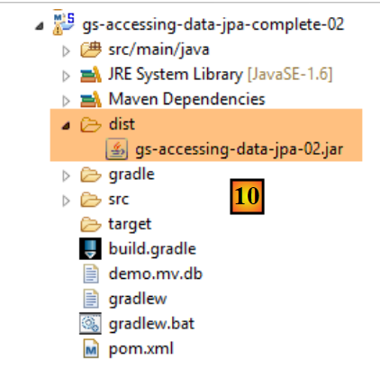
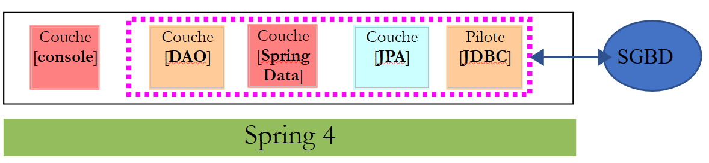
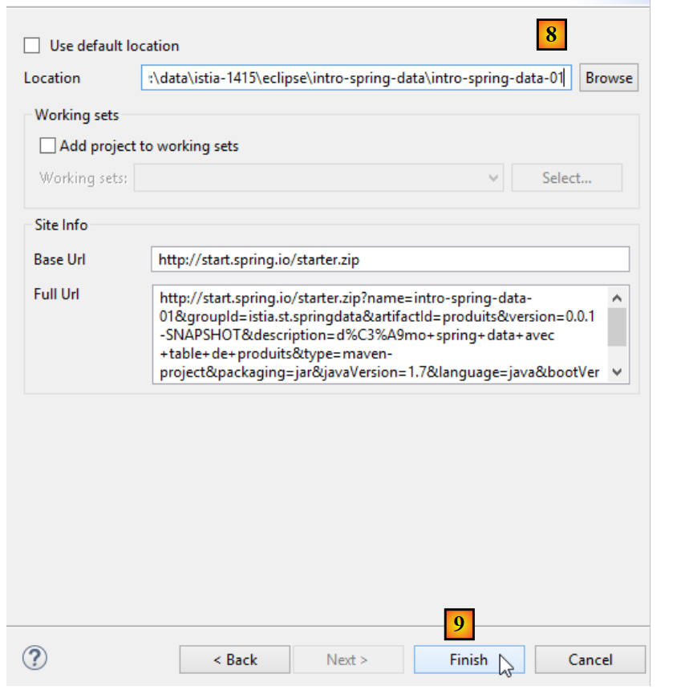
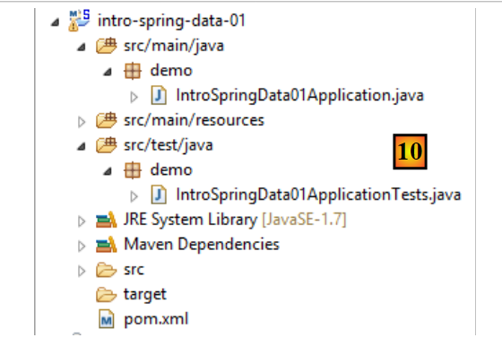
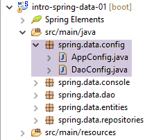
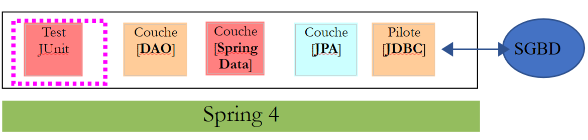
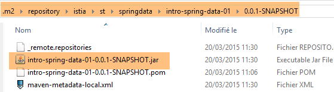

11. [الدورة التدريبية]: إدارة قواعد البيانات العلائقية باستخدام Spring Data
الكلمات المفتاحية: بنية متعددة الطبقات، Spring، حقن التبعية، JPA (واجهة برمجة تطبيقات الاستمرارية في Java)، Spring Data.
سنقوم بتنفيذ طبقة [DAO] الخاصة بالمهمة باستخدام [Spring Data]، وهو أحد مكونات نظام Spring. يعتمد [Spring Data] على طبقة JPA (Java Persistence API) التي تسمح لطبقة [DAO] بمعالجة الكائنات بدلاً من عبارات SQL. في النهاية، لا تدرك طبقة [DAO] أنها تتفاعل مع قاعدة بيانات. فهي تعرف فقط واجهة طبقة [Spring Data].
 |
سنستكشف أولاً [Spring Data] من خلال مثالين.
11.1. الدعم
 |
- في [1]، يحتوي المجلد [support / chap-11] على ثلاثة مشاريع Eclipse؛
- في [2]، النص البرمجي SQL لإنشاء قاعدة البيانات النموذجية لهذا الفصل؛
11.2. المثال 1
يقدم موقع Spring الإلكتروني العديد من الدروس التعليمية للبدء في استخدام Spring [http://spring.io/guides]. سنستخدم إحداها لتقديم Spring Data. للقيام بذلك، سنستخدم Spring Tool Suite (STS).
 |
- في [1]، نقوم باستيراد أحد البرامج التعليمية من [spring.io/guides]؛
 |
- في [2]، نختار البرنامج التعليمي [Accessing Data Jpa]، الذي يوضح كيفية الوصول إلى قاعدة البيانات باستخدام Spring Data؛
- في [3]، نختار مشروعًا تم تكوينه بواسطة Maven؛
- في [4]، يتوفر البرنامج التعليمي في شكلين: [initial]، وهي نسخة فارغة تقوم بملئها باتباع البرنامج التعليمي، أو [complete]، وهي النسخة النهائية من البرنامج التعليمي. نختار الخيار الأخير؛
- في [5]، يمكنك اختيار عرض البرنامج التعليمي في متصفح؛
- في [6]، المشروع النهائي.
11.2.1. تكوين Maven للمشروع
يتم تكوين تبعيات Maven للمشروع في ملف [pom.xml]:
<groupId>org.springframework</groupId>
<artifactId>gs-accessing-data-jpa</artifactId>
<version>0.1.0</version>
<parent>
<groupId>org.springframework.boot</groupId>
<artifactId>spring-boot-starter-parent</artifactId>
<version>1.1.10.RELEASE</version>
</parent>
<dependencies>
<dependency>
<groupId>org.springframework.boot</groupId>
<artifactId>spring-boot-starter-data-jpa</artifactId>
</dependency>
<dependency>
<groupId>com.h2database</groupId>
<artifactId>h2</artifactId>
</dependency>
</dependencies>
<properties>
<!-- use UTF-8 for everything -->
<project.build.sourceEncoding>UTF-8</project.build.sourceEncoding>
<project.reporting.outputEncoding>UTF-8</project.reporting.outputEncoding>
<start-class>hello.Application</start-class>
</properties>
- الأسطر 5–9: تعريف مشروع Maven الأصلي. يحدد هذا المشروع معظم تبعيات المشروع. قد تكون هذه التبعيات كافية، وفي هذه الحالة لا تضاف أي تبعيات إضافية، أو قد لا تكون كافية، وفي هذه الحالة تضاف التبعيات المفقودة؛
- الأسطر 12–15: تحدد تبعية لـ [spring-boot-starter-data-jpa]. تحتوي هذه الأداة على فئات Spring Data؛
- الأسطر 16–19: تحدد تبعية لنظام إدارة قواعد البيانات H2، الذي يسمح لك بإنشاء وإدارة قواعد البيانات في الذاكرة.
دعونا نلقي نظرة على الفئات التي توفرها هذه التبعيات:
 |  |  |
هناك العديد منها:
- بعضها ينتمي إلى نظام Spring (تلك التي تبدأ بـ spring)؛
- والبعض الآخر ينتمي إلى منظومة Hibernate (hibernate، jboss)، التي نستخدم تطبيق JPA الخاص بها هنا؛
- وبعضها الآخر عبارة عن مكتبات اختبار (junit، hamcrest)؛
- وبعضها الآخر عبارة عن مكتبات تسجيل (log4j، logback، slf4j)؛
سنحتفظ بها جميعًا. بالنسبة لتطبيق الإنتاج، يجب الاحتفاظ فقط بالمكتبات الضرورية.
في السطر 26 من ملف [pom.xml]، نجد السطر:
<start-class>hello.Application</start-class>
هذا السطر مرتبط بالأسطر التالية:
<build>
<plugins>
<plugin>
<artifactId>maven-compiler-plugin</artifactId>
</plugin>
<plugin>
<groupId>org.springframework.boot</groupId>
<artifactId>spring-boot-maven-plugin</artifactId>
</plugin>
</plugins>
</build>
الأسطر 6–9: يتيح لك [spring-boot-maven-plugin] إنشاء ملف JAR القابل للتنفيذ الخاص بالتطبيق. ثم تحدد السطر 26 من ملف [pom.xml] الفئة القابلة للتنفيذ لهذا الملف JAR.
11.2.2. طبقة [JPA]
يتم التعامل مع الوصول إلى قاعدة البيانات من خلال طبقة [JPA]، وهي واجهة برمجة تطبيقات Java Persistence:
 |
 |
التطبيق بسيط ويقوم بإدارة كيانات [Customer]. تعد فئة [Customer] جزءًا من طبقة [JPA] وهي كما يلي:
package hello;
import javax.persistence.Entity;
import javax.persistence.GeneratedValue;
import javax.persistence.GenerationType;
import javax.persistence.Id;
@Entity
public class Customer {
@Id
@GeneratedValue(strategy = GenerationType.AUTO)
private long id;
private String firstName;
private String lastName;
protected Customer() {
}
public Customer(String firstName, String lastName) {
this.firstName = firstName;
this.lastName = lastName;
}
@Override
public String toString() {
return String.format("Customer[id=%d, firstName='%s', lastName='%s']", id, firstName, lastName);
}
}
لدى العميل معرف [id] واسم أول [firstName] واسم عائلة [lastName]. تمثل كل مثيل [Customer] صفًا في جدول قاعدة البيانات.
- السطر 8: تعليق JPA يضمن أن استمرارية مثيلات [Customer] (إنشاء، قراءة، تحديث، حذف) ستدار بواسطة تطبيق JPA. استنادًا إلى تبعيات Maven، يمكننا أن نرى أن تطبيق JPA/Hibernate قيد الاستخدام؛
- السطران 11-12: تعليقات توضيحية لـ JPA تربط حقل [id] بالمفتاح الأساسي لجدول [Customer]. يشير السطر 12 إلى أن تطبيق JPA سيستخدم طريقة إنشاء المفتاح الأساسي الخاصة بنظام إدارة قواعد البيانات المستخدم، وهو H2 في هذه الحالة؛
لا توجد تعليقات توضيحية أخرى لـ JPA. وبالتالي، سيتم استخدام القيم الافتراضية:
- سيتم تسمية جدول [Customer] على اسم الفئة، أي [Customer]؛
- سيتم تسمية أعمدة هذا الجدول على اسم حقول الفئة: [id, firstName, lastName]، مع ملاحظة أن حالة الأحرف لا تؤخذ في الاعتبار في أسماء أعمدة الجدول؛
لاحظ أن تطبيق JPA المستخدم لا يُسمى أبدًا.
11.2.3. طبقة [Spring Data]
تنفذ فئة [CustomerRepository] طبقة الوصول لجدول [Customer]. وفيما يلي كودها:
 |
 |
package hello;
import java.util.List;
import org.springframework.data.repository.CrudRepository;
public interface CustomerRepository extends CrudRepository<Customer, Long> {
List<Customer> findByLastName(String lastName);
}
وبالتالي، فهذه واجهة وليست فئة (السطر 7). وهي تمتد واجهة [CrudRepository]، وهي واجهة Spring Data (السطر 5). يتم تحديد معلمات هذه الواجهة بواسطة نوعين: الأول هو نوع العناصر المدارة، وهو هنا نوع [Customer]؛ والثاني هو نوع المفتاح الأساسي للعناصر المدارة، وهو هنا نوع [Long]. واجهة [CrudRepository] هي كما يلي:
package org.springframework.data.repository;
import java.io.Serializable;
@NoRepositoryBean
public interface CrudRepository<T, ID extends Serializable> extends Repository<T, ID> {
<S extends T> S save(S entity);
<S extends T> Iterable<S> save(Iterable<S> entities);
T findOne(ID id);
boolean exists(ID id);
Iterable<T> findAll();
Iterable<T> findAll(Iterable<ID> ids);
long count();
void delete(ID id);
void delete(T entity);
void delete(Iterable<? extends T> entities);
void deleteAll();
}
تحدد هذه الواجهة عمليات CRUD (إنشاء – قراءة – تحديث – حذف) التي يمكن تنفيذها على نوع JPA T:
- السطر 8: تسمح طريقة save بتخزين كيان T في قاعدة البيانات. وهي تخزن الكيان باستخدام المفتاح الأساسي المخصص له بواسطة نظام إدارة قواعد البيانات (DBMS). كما تسمح بتحديث كيان T المحدد بواسطة معرف المفتاح الأساسي الخاص به. يعتمد الاختيار بين هذين الإجراءين على قيمة معرف المفتاح الأساسي: إذا كانت قيمة معرف المفتاح الأساسي null، تتم عملية التخزين؛ وإلا، تتم عملية التحديث؛
- السطر 10: كما هو مذكور أعلاه، ولكن بالنسبة لقائمة الكيانات؛
- السطر 12: تسترد طريقة findOne كيان T المحدد بواسطة معرف المفتاح الأساسي الخاص به؛
- السطر 22: تسمح لك طريقة delete بحذف كيان T المحدد بواسطة معرف المفتاح الأساسي الخاص به؛
- الأسطر 24-28: أشكال مختلفة من طريقة [delete]؛
- السطر 16: تسترد طريقة [findAll] جميع الكيانات T الدائمة؛
- السطر 18: كما هو مذكور أعلاه، ولكن يقتصر على الكيانات التي تم توفير قائمة بمعرفاتها؛
لنعد إلى واجهة [CustomerRepository]:
package hello;
import java.util.List;
import org.springframework.data.repository.CrudRepository;
public interface CustomerRepository extends CrudRepository<Customer, Long> {
List<Customer> findByLastName(String lastName);
}
- السطر 9 يسمح لك باسترداد [Customer] حسب [lastName]؛
وهذا كل شيء بالنسبة لطبقة [DAO]. لا توجد فئة تنفيذ للواجهة السابقة. يتم إنشاؤها في وقت التشغيل بواسطة [Spring Data]. يتم تنفيذ أساليب واجهة [CrudRepository] تلقائيًا. أما بالنسبة للأساليب المضافة إلى واجهة [CustomerRepository]، فهذا يعتمد على الحالة. لنعد إلى تعريف [Customer]:
private long id;
private String firstName;
private String lastName;
يتم تنفيذ الطريقة الموجودة في السطر 9 تلقائيًا بواسطة [Spring Data] لأنها تشير إلى حقل [lastName] (السطر 3) في [Customer]. عندما تصادف طريقة [findBySomething] في الواجهة المراد تنفيذها، تقوم Spring Data بتنفيذها باستخدام استعلام JPQL (لغة استعلامات الاستمرارية في Java) التالي:
لذلك، يجب أن يحتوي النوع T على حقل باسم [شيء ما]. وبالتالي، فإن الطريقة
بكود مشابه لما يلي:
return [em].createQuery("select c from Customer c where c.lastName=:value").setParameter("value",lastName).getResultList()
حيث يشير [em] إلى سياق ثبات JPA. وهذا ممكن فقط إذا كانت فئة [Customer] تحتوي على حقل باسم [lastName]، وهو ما يحدث بالفعل.
في الختام، في الحالات البسيطة، يسمح لنا Spring Data بتنفيذ طبقة [DAO] بواجهة بسيطة.
11.2.4. طبقة [console]
 |
 |
فئة [Application] هي كما يلي:
package hello;
import org.springframework.beans.factory.annotation.Autowired;
import org.springframework.boot.CommandLineRunner;
import org.springframework.boot.SpringApplication;
import org.springframework.boot.autoconfigure.SpringBootApplication;
@SpringBootApplication
public class Application implements CommandLineRunner {
@Autowired
CustomerRepository repository;
public static void main(String[] args) {
SpringApplication.run(Application.class);
}
@Override
public void run(String... strings) throws Exception {
// save a couple of customers
repository.save(new Customer("Jack", "Bauer"));
repository.save(new Customer("Chloe", "O'Brian"));
repository.save(new Customer("Kim", "Bauer"));
repository.save(new Customer("David", "Palmer"));
repository.save(new Customer("Michelle", "Dessler"));
// fetch all customers
System.out.println("Customers found with findAll():");
System.out.println("-------------------------------");
for (Customer customer : repository.findAll()) {
System.out.println(customer);
}
System.out.println();
// fetch an individual customer by ID
Customer customer = repository.findOne(1L);
System.out.println("Customer found with findOne(1L):");
System.out.println("--------------------------------");
System.out.println(customer);
System.out.println();
// fetch customers by last name
System.out.println("Customer found with findByLastName('Bauer'):");
System.out.println("--------------------------------------------");
for (Customer bauer : repository.findByLastName("Bauer")) {
System.out.println(bauer);
}
}
}
- السطر 9: تنفذ الفئة واجهة [CommandLineRunner]، وهي واجهة [Spring Boot] (السطر 4). تحتوي هذه الواجهة على طريقة واحدة فقط، وهي الموجودة في السطر 19؛
- السطر 8: @SpringBootApplication هي تعليمة توضيحية تجمع عدة تعليقات توضيحية [Spring Boot]:
- @Configuration: تشير إلى أن الفئة هي فئة تكوين؛
- @EnableAutoConfiguration: يوجه [Spring Boot] لإنشاء عدد من الفاصوليا تلقائيًا بناءً على خصائص متنوعة، لا سيما محتويات مسار فئات المشروع. ونظرًا لوجود مكتبات Hibernate في مسار الفئات، سيتم تنفيذ فاصوليا [entityManagerFactory] باستخدام Hibernate. ونظرًا لوجود مكتبة H2 DBMS في مسار الفئات، سيتم تنفيذ فاصوليا [dataSource] باستخدام H2. في bean [dataSource]، يجب علينا أيضًا تعريف اسم المستخدم وكلمة المرور. هنا، سيستخدم Spring Boot المسؤول الافتراضي لـ H2، الذي لا يحتوي على كلمة مرور. ونظرًا لوجود مكتبة [spring-tx] في مسار الفئات (Classpath)، سيتم استخدام مدير المعاملات في Spring؛
- @EnableWebMvc: إذا كانت مكتبة [spring-mvc] موجودة في مسار الفئات. في هذه الحالة، يتم إجراء التكوين التلقائي لتطبيق الويب؛
- @ComponentScan: الذي يحدد لـ Spring مكان البحث عن الحبوب والتكوينات والخدمات الأخرى. هنا، يتم البحث عنها افتراضيًا في الحزمة التي تحتوي على الفئة المُعلَّمة، أي حزمة [hello]. وبالتالي، سيتم العثور على فئتي [Customer] و [CustomerRepository]. ونظرًا لأن الأولى تحتوي على تعليق [@Entity]، فسيتم تصنيفها ككيان يديره Hibernate. ونظرًا لأن الثانية تمتد واجهة [CrudRepository]، فسيتم تسجيلها كحبة Spring؛
- السطران 11-12: يتم حقن bean [CustomerRepository] في كود الفئة الرئيسية؛
- السطر 15: يتم تنفيذ الطريقة الثابتة [run] لفئة [SpringApplication] من مشروع Spring Boot. معلمتها هي الفئة التي تحتوي على تعليق [Configuration] أو [EnableAutoConfiguration]. بعد ذلك، سيتم تنفيذ كل ما تم شرحه سابقًا. والنتيجة هي سياق تطبيق Spring، أي مجموعة من الحبوب التي يديرها Spring؛
تستخدم العمليات التالية ببساطة أساليب الكائن الذي ينفذ واجهة [CustomerRepository]. وفيما يلي مخرجات وحدة التحكم:
- الأسطر 1-8: شعار مشروع Spring Boot؛
- السطر 9: يتم تنفيذ فئة [hello.Application]؛
- السطر 10: [AnnotationConfigApplicationContext] هي فئة تنفذ واجهة [ApplicationContext] الخاصة بـ Spring. وهي عبارة عن حاوية bean؛
- السطر 11: يتم تنفيذ bean [entityManagerFactory] باستخدام فئة [LocalContainerEntityManagerFactory]، وهي فئة Spring؛
- السطر 12: يظهر [Hibernate]. هذا هو تطبيق JPA الذي تم اختياره؛
- السطر 19: لهجة Hibernate هي متغير SQL الذي سيتم استخدامه مع نظام إدارة قواعد البيانات (DBMS). هنا، تشير لهجة [H2Dialect] إلى أن Hibernate سيعمل مع نظام إدارة قواعد البيانات H2؛
- السطران 21-22: يتم إنشاء قاعدة البيانات. يتم إنشاء الجدول [CUSTOMER]. وهذا يعني أنه تم تكوين Hibernate لإنشاء جداول من تعريفات JPA، وفي هذه الحالة تعريف JPA لفئة [Customer]؛
- الأسطر 26-30: نتيجة طريقة [findAll] للواجهة؛
- السطر 34: نتيجة طريقة [findOne] للواجهة؛
- السطور 38-39: نتائج طريقة [findByLastName]؛
- السطور 41 وما يليها: سجلات من إغلاق سياق Spring.
11.2.5. التكوين اليدوي لمشروع Spring Data
نقوم بنسخ المشروع السابق إلى مشروع [gs-accessing-data-jpa-02]:
 |
في هذا المشروع الجديد، لن نعتمد على التكوين التلقائي الذي يوفره Spring Boot. سنقوم بتكوينه يدويًا. قد يكون هذا مفيدًا إذا كانت التكوينات الافتراضية لا تناسب احتياجاتنا.
أولاً، سنحدد التبعيات الضرورية في ملف [pom.xml]:
<?xml version="1.0" encoding="UTF-8"?>
<project xmlns="http://maven.apache.org/POM/4.0.0" xsi:schemaLocation="http://maven.apache.org/POM/4.0.0 http://maven.apache.org/maven-v4_0_0.xsd"
xmlns:xsi="http://www.w3.org/2001/XMLSchema-instance">
<modelVersion>4.0.0</modelVersion>
<groupId>org.springframework</groupId>
<artifactId>gs-accessing-data-jpa-02</artifactId>
<version>0.1.0</version>
<parent>
<groupId>org.springframework.boot</groupId>
<artifactId>spring-boot-starter-parent</artifactId>
<version>1.2.7.RELEASE</version>
</parent>
<dependencies>
<!-- Spring Data -->
<dependency>
<groupId>org.springframework.data</groupId>
<artifactId>spring-data-jpa</artifactId>
</dependency>
<!-- Hibernate -->
<dependency>
<groupId>org.hibernate</groupId>
<artifactId>hibernate-entitymanager</artifactId>
</dependency>
<!-- H2 Database -->
<dependency>
<groupId>com.h2database</groupId>
<artifactId>h2</artifactId>
</dependency>
<!-- Tomcat JDBC -->
<dependency>
<groupId>org.apache.tomcat</groupId>
<artifactId>tomcat-jdbc</artifactId>
</dependency>
</dependencies>
<properties>
<!-- use UTF-8 for everything -->
<project.build.sourceEncoding>UTF-8</project.build.sourceEncoding>
<project.reporting.outputEncoding>UTF-8</project.reporting.outputEncoding>
</properties>
<build>
<plugins>
<plugin>
<groupId>org.springframework.boot</groupId>
<artifactId>spring-boot-maven-plugin</artifactId>
</plugin>
</plugins>
</build>
<repositories>
<repository>
<id>spring-releases</id>
<name>Spring Releases</name>
<url>https://repo.spring.io/libs-release</url>
</repository>
<repository>
<id>org.jboss.repository.releases</id>
<name>JBoss Maven Release Repository</name>
<url>https://repository.jboss.org/nexus/content/repositories/releases</url>
</repository>
</repositories>
<pluginRepositories>
<pluginRepository>
<id>spring-releases</id>
<name>Spring Releases</name>
<url>https://repo.spring.io/libs-release</url>
</pluginRepository>
</pluginRepositories>
</project>
- الأسطر 10–14: مشروع Maven الأصلي الذي سنستخدم مكتباته؛
- الأسطر 18–21: Spring Data المستخدم للوصول إلى قاعدة البيانات؛
- الأسطر 23–26: تطبيق Hibernate لمواصفات JPA؛
- الأسطر 28–31: نظام إدارة قواعد البيانات H2؛
- الأسطر 33–36: غالبًا ما تُستخدم قواعد البيانات مع مجموعات الاتصال، مما يتجنب فتح وإغلاق الاتصالات بشكل متكرر. هنا، التنفيذ المستخدم هو [tomcat-jdbc]؛
في المشروع الجديد، تظل الكيان [Customer] والواجهة [CustomerRepository] دون تغيير. سنقوم بتعديل فئة [Application]، والتي سيتم تقسيمها إلى فئتين:
- [Config]، التي ستكون فئة التكوين؛
- [Main]، التي ستكون فئة التنفيذ؛
 |
أصبحت فئة [Application] القابلة للتنفيذ كما يلي:
package console;
import org.springframework.context.annotation.AnnotationConfigApplicationContext;
import repositories.CustomerRepository;
import config.AppConfig;
import entities.Customer;
public class Application {
public static void main(String[] args) {
// instantiation Spring context
AnnotationConfigApplicationContext context = new AnnotationConfigApplicationContext(AppConfig.class);
CustomerRepository repository = context.getBean(CustomerRepository.class);
// save a couple of customers
repository.save(new Customer("Jack", "Bauer"));
repository.save(new Customer("Chloe", "O'Brian"));
repository.save(new Customer("Kim", "Bauer"));
repository.save(new Customer("David", "Palmer"));
repository.save(new Customer("Michelle", "Dessler"));
...
// closing context
context.close();
}
}
- السطر 9: لم تعد فئة [Application] تحتوي على أي تعليقات توضيحية للتكوين؛
- الأسطر 3–7: لاحظ أنه لم يعد هناك أي استيراد لحزمة [Spring Boot]؛
- السطر 12: نقوم بإنشاء مثيلات لفاصوليا Spring. نحصل على سياق Spring، الذي يحتوي على مراجع للفاصوليا التي تم إنشاؤها؛
- السطر 13: نطلب مرجعًا إلى حبة [CustomerRepository]؛
فئة [ Config] التي تهيئ المشروع هي كما يلي:
package config;
import javax.persistence.EntityManagerFactory;
import org.apache.tomcat.jdbc.pool.DataSource;
import org.springframework.context.annotation.Bean;
import org.springframework.context.annotation.Configuration;
import org.springframework.data.jpa.repository.config.EnableJpaRepositories;
import org.springframework.orm.jpa.JpaTransactionManager;
import org.springframework.orm.jpa.JpaVendorAdapter;
import org.springframework.orm.jpa.LocalContainerEntityManagerFactoryBean;
import org.springframework.orm.jpa.vendor.Database;
import org.springframework.orm.jpa.vendor.HibernateJpaVendorAdapter;
import org.springframework.transaction.PlatformTransactionManager;
import org.springframework.transaction.annotation.EnableTransactionManagement;
//@EnableTransactionManagement
@EnableJpaRepositories(basePackages = { "repositories" })
@Configuration
// @ComponentScan(basePackages={"package1","package2"})
public class AppConfig {
// h2 database
@Bean
public DataSource dataSource() {
// data source TomcatJdbc
DataSource dataSource = new DataSource();
// configuration access JDBC
dataSource.setDriverClassName("org.h2.Driver");
dataSource.setUrl("jdbc:h2:./demo");
dataSource.setUsername("sa");
dataSource.setPassword("");
// an initially open connection
dataSource.setInitialSize(1);
// result
return dataSource;
}
// the provider JPA
@Bean
public JpaVendorAdapter jpaVendorAdapter() {
HibernateJpaVendorAdapter hibernateJpaVendorAdapter = new HibernateJpaVendorAdapter();
hibernateJpaVendorAdapter.setShowSql(false);
hibernateJpaVendorAdapter.setGenerateDdl(true);
hibernateJpaVendorAdapter.setDatabase(Database.H2);
return hibernateJpaVendorAdapter;
}
// EntityManagerFactory
@Bean
public EntityManagerFactory entityManagerFactory(JpaVendorAdapter jpaVendorAdapter, DataSource dataSource) {
LocalContainerEntityManagerFactoryBean factory = new LocalContainerEntityManagerFactoryBean();
factory.setJpaVendorAdapter(jpaVendorAdapter);
factory.setPackagesToScan("entities");
factory.setDataSource(dataSource);
factory.afterPropertiesSet();
return factory.getObject();
}
// Transaction manager
@Bean
public PlatformTransactionManager transactionManager(EntityManagerFactory entityManagerFactory) {
JpaTransactionManager txManager = new JpaTransactionManager();
txManager.setEntityManagerFactory(entityManagerFactory);
return txManager;
}
}
- السطر 17: تشير العلامة [@EnableTransactionManagement] إلى أن طرق واجهات [CrudRepository] يجب أن تُنفَّذ ضمن معاملة. وقد تم تعليقها لأن هذا هو السلوك الافتراضي؛
- السطر 18: تحدد العلامة [@EnableJpaRepositories] الدلائل التي توجد فيها واجهات Spring Data [CrudRepository]. ستصبح هذه الواجهات مكونات Spring وستكون متاحة في سياق Spring؛
- السطر 19: تجعل العلامة [@Configuration] فئة [Config] فئة تكوين Spring؛
- السطر 20: تدرج العلامة [@ComponentScan] الدلائل التي يجب البحث فيها عن مكونات Spring. مكونات Spring هي فئات مزودة بعلامات Spring مثل @Service و@Component و@Controller، إلخ. هنا، لا توجد مكونات أخرى غير تلك المحددة داخل فئة [AppConfig]، لذا تم تعليق هذه العلامة؛
- الأسطر 24–37: تحدد مصدر البيانات، قاعدة بيانات H2. إن تعليق @Bean في السطر 25 هو الذي يجعل الكائن الذي تم إنشاؤه بواسطة هذه الطريقة مكونًا تديره Spring. يمكن أن يكون اسم الطريقة هنا أي شيء. ومع ذلك، يجب تسميته [dataSource] إذا كان EntityManagerFactory في السطر 51 غائبًا وتم تعريفه عبر التكوين التلقائي؛
- السطر 30: سيتم تسمية قاعدة البيانات [demo] وسيتم إنشاؤها في مجلد المشروع؛
- الأسطر 40-47: تعريف تطبيق JPA المستخدم، وهو في هذه الحالة تطبيق Hibernate. يمكن أن يكون اسم الطريقة هنا أي شيء؛
- السطر 43: لا توجد سجلات SQL؛
- السطر 44: سيتم إنشاء قاعدة البيانات إذا لم تكن موجودة؛
- الأسطر 50-58: تحدد EntityManagerFactory التي ستدير استمرارية JPA. يجب تسمية الطريقة [entityManagerFactory]؛
- السطر 51: تتلقى الطريقة معلمتين من أنواع الحبتين المحددتين سابقًا. سيتم بعد ذلك إنشاء هاتين الحبتين وحقنهما بواسطة Spring كمعلمات للطريقة؛
- السطر 53: يحدد تنفيذ JPA المراد استخدامه؛
- السطر 54: يحدد الدلائل التي يمكن العثور فيها على كيانات JPA؛
- السطر 55: يحدد مصدر البيانات المراد إدارته؛
- الأسطر 61–66: مدير المعاملات. يجب تسمية الطريقة [transactionManager]. تتلقى الحبة من الأسطر 51–58 كمعلمة؛
- السطر 64: يرتبط مدير المعاملات بـ EntityManagerFactory؛
يمكن تعريف الطرق السابقة بأي ترتيب.
يؤدي تشغيل المشروع إلى نفس النتائج. يظهر ملف جديد في مجلد المشروع، وهو ملف قاعدة بيانات H2:
 |
11.2.6. إنشاء أرشيف قابل للتنفيذ
لإنشاء أرشيف قابل للتنفيذ للمشروع، اتبع الخطوات التالية:
 |
- في [1]: قم بإنشاء تكوين وقت التشغيل؛
- في [2]: من النوع [تطبيق Java]
- في [3]: حدد المشروع المراد تشغيله (استخدم زر "تصفح")؛
- في [4]: حدد الفئة المراد تشغيلها؛
- في [5]: اسم تكوين التشغيل — يمكن أن يكون أي شيء؛
 |
- في [6]: تصدير المشروع؛
- في [7]: كأرشيف JAR قابل للتنفيذ؛
- في [8]: حدد مسار واسم الملف القابل للتنفيذ المراد إنشاؤه؛
- في [9]: اسم تكوين وقت التشغيل الذي تم إنشاؤه في [5]؛
 |
- في [10]، الأرشيف الذي تم إنشاؤه؛
بمجرد الانتهاء من ذلك، افتح نافذة الأوامر في المجلد الذي يحتوي على الأرشيف القابل للتنفيذ:
يتم تنفيذ الأرشيف على النحو التالي:
.....\dist>java -jar gs-accessing-data-jpa-02.jar
النتائج المعروضة في وحدة التحكم هي كما يلي:
11.3. مثال 2
11.3.1. مقدمة
سنعود إلى مثال جدول المنتجات الذي استخدمناه لتقديم واجهة برمجة تطبيقات JDBC وننشئ البنية التالية:
 |
تحتوي قاعدة البيانات [dbintrospringjpa] على جدولين: [PRODUCTS] و[CATEGORIES]. ويبدو جدول [CATEGORIES] كما يلي:
 |
- [ID]: المفتاح الأساسي في وضع AUTO_INCREMENT؛
- [VERSION]: رقم إصدار السجل؛
- [NAME]: اسم الفئة - فريد؛
جدول [PRODUCTS] كما يلي:
 |
- [ID]: المفتاح الأساسي في وضع AUTO_INCREMENT؛
- [VERSION]: رقم إصدار السجل؛
- [NAME]: اسم المنتج - فريد؛
- [CATEGORY_ID]: معرّف الفئة - مفتاح خارجي في حقل [CATEGORIES.ID]؛
- [PRICE]: سعره؛
- [DESCRIPTION]: وصف المنتج؛
المهمة: قم بإنشاء قاعدة البيانات [dbintrospringdata] باستخدام البرنامج النصي SQL [dbintrospringdata.sql] الموجود في مواد الدعم:
11.3.2. إنشاء مشروع Maven
لإنشاء قالب مشروع Spring Data، اتبع الخطوات التالية:
 |
- في [1]، أنشئ مشروعًا جديدًا؛
- في [2]، حدد نوع [Spring Starter Project]؛
- سيكون المشروع الذي تم إنشاؤه مشروع Maven. في [3]، حدد اسم مجموعة المشروع؛
- في [4]، حدد اسم الأداة (ملف JAR في هذه الحالة) التي سيتم إنشاؤها عند بناء المشروع؛
- في [5]: اسم مشروع Eclipse – يمكن أن يكون أي شيء (لا يجب أن يكون هو نفسه [4])؛
- في [7]: حدد أنك تقوم بإنشاء مشروع بطبقة [JPA] باستخدام نظام إدارة قواعد البيانات MySQL. سيتم بعد ذلك تضمين التبعيات المطلوبة لمثل هذا المشروع في ملف [pom.xml]؛
 |
- في [8]، أدخل اسم مجلد المشروع؛
- في [9]، أكمل المعالج؛
 |
- في [10]: المشروع الذي تم إنشاؤه؛
يتضمن ملف [pom.xml] التبعيات المطلوبة لمشروع JPA:
<?xml version="1.0" encoding="UTF-8"?>
<project xmlns="http://maven.apache.org/POM/4.0.0" xmlns:xsi="http://www.w3.org/2001/XMLSchema-instance"
xsi:schemaLocation="http://maven.apache.org/POM/4.0.0 http://maven.apache.org/xsd/maven-4.0.0.xsd">
<modelVersion>4.0.0</modelVersion>
<groupId>istia.st.springdata</groupId>
<artifactId>intro-spring-data-01</artifactId>
<version>0.0.1-SNAPSHOT</version>
<packaging>jar</packaging>
<name>intro-spring-data-01</name>
<description>démo spring data avec table de produits</description>
<parent>
<groupId>org.springframework.boot</groupId>
<artifactId>spring-boot-starter-parent</artifactId>
<version>1.2.2.RELEASE</version>
<relativePath/> <!-- lookup parent from repository -->
</parent>
<properties>
<project.build.sourceEncoding>UTF-8</project.build.sourceEncoding>
<start-class>demo.IntroSpringData01Application</start-class>
<java.version>1.7</java.version>
</properties>
<dependencies>
<dependency>
<groupId>org.springframework.boot</groupId>
<artifactId>spring-boot-starter-data-jpa</artifactId>
</dependency>
<dependency>
<groupId>mysql</groupId>
<artifactId>mysql-connector-java</artifactId>
<scope>runtime</scope>
</dependency>
<dependency>
<groupId>org.springframework.boot</groupId>
<artifactId>spring-boot-starter-test</artifactId>
<scope>test</scope>
</dependency>
</dependencies>
<build>
<plugins>
<plugin>
<groupId>org.springframework.boot</groupId>
<artifactId>spring-boot-maven-plugin</artifactId>
</plugin>
</plugins>
</build>
</project>
- الأسطر 14–19: مشروع Maven الأصلي — يحدد عددًا كبيرًا من المكتبات مع إصداراتها — نستخدم هذه المكتبات كاعتمادات Maven دون تحديد إصداراتها؛
- الأسطر 28–31: التبعية المطلوبة لـ JPA – ستشمل [Spring Data]؛
- الأسطر 32–36: التبعية على برنامج تشغيل MySQL JDBC؛
- الأسطر 37–41: التبعيات المطلوبة لاختبارات JUnit المدمجة مع Spring؛
لا تقوم الفئة القابلة للتنفيذ [Application] بأي شيء ولكنها معدة مسبقًا:
package demo;
import org.springframework.boot.SpringApplication;
import org.springframework.boot.autoconfigure.SpringBootApplication;
@SpringBootApplication
public class IntroSpringData01Application {
public static void main(String[] args) {
SpringApplication.run(IntroSpringData01Application.class, args);
}
}
- تجعل العلامة [@SpringBootApplication] الفئة فئة تكوين تلقائي للمشروع؛
فئة الاختبار [ApplicationTests] لا تقوم بأي شيء ولكنها مهيأة مسبقًا:
package demo;
import org.junit.Test;
import org.junit.runner.RunWith;
import org.springframework.boot.test.SpringApplicationConfiguration;
import org.springframework.test.context.junit4.SpringJUnit4ClassRunner;
@RunWith(SpringJUnit4ClassRunner.class)
@SpringApplicationConfiguration(classes = IntroSpringData01Application.class)
public class IntroSpringData01ApplicationTests {
@Test
public void contextLoads() {
}
}
- السطر 9: تسمح علامة [@SpringApplicationConfiguration] باستخدام ملف التكوين [Application]. وبالتالي ستستفيد فئة الاختبار من جميع الفاصوليا المحددة في هذا الملف؛
- السطر 8: تتيح العلامة [@RunWith] تكامل Spring مع JUnit: يمكن تنفيذ الفئة كاختبار JUnit. [@RunWith] هي علامة JUnit (السطر 4)، في حين أن فئة [SpringJUnit4ClassRunner] هي فئة Spring (السطر 6)؛
الآن بعد أن أصبح لدينا هيكل تطبيق JPA، يمكننا إكماله لكتابة مشروع طبقة الاستمرارية المرتبط بقاعدة بيانات المنتج.
11.3.3. مشروع Eclipse
سنقوم بتوسيع المشروع السابق على النحو التالي:
 |
- [AppConfig.java]: فئة تكوين مشروع Spring؛
- [Main.java]: فئة المشروع القابلة للتنفيذ؛
- [IDao.java]: واجهة طبقة [DAO]؛
- [Dao.java]: فئة التنفيذ لطبقة [DAO]؛
- [AbstractEntity.java]: الفئة الأم لفئتي [Product] و [Category]؛
- [Product.java]: الفئة المرتبطة بصف في جدول [PRODUCTS] في قاعدة البيانات؛
- [Category.java]: الفئة المرتبطة بصف في جدول [CATEGORIES] في قاعدة البيانات؛
- [ProductsRepository]: واجهة Spring Data للوصول إلى جدول [PRODUCTS]؛
- [CategoriesRepository]: واجهة Spring Data للوصول إلى جدول [CATEGORIES]؛
- [pom.xml]: ملف تكوين مشروع Maven؛
يُنفذ هذا المشروع البنية التالية:
 |
لا ترى طبقة [DAO] سوى الطبقة التي تنفذها [Spring Data].
11.3.4. تكوين Maven
ملف [pom.xml] لمشروع Maven هو كما يلي:
<?xml version="1.0" encoding="UTF-8"?>
<project xmlns="http://maven.apache.org/POM/4.0.0" xmlns:xsi="http://www.w3.org/2001/XMLSchema-instance"
xsi:schemaLocation="http://maven.apache.org/POM/4.0.0 http://maven.apache.org/xsd/maven-4.0.0.xsd">
<modelVersion>4.0.0</modelVersion>
<groupId>istia.st.springdata</groupId>
<artifactId>intro-spring-data-01</artifactId>
<version>0.0.1-SNAPSHOT</version>
<packaging>jar</packaging>
<name>intro-spring-data-01</name>
<description>démo spring data avec table de produits</description>
<parent>
<groupId>org.springframework.boot</groupId>
<artifactId>spring-boot-starter-parent</artifactId>
<version>1.2.7.RELEASE</version>
</parent>
<dependencies>
<!-- Spring Data -->
<dependency>
<groupId>org.springframework.data</groupId>
<artifactId>spring-data-jpa</artifactId>
</dependency>
<!-- Hibernate -->
<dependency>
<groupId>org.hibernate</groupId>
<artifactId>hibernate-entitymanager</artifactId>
</dependency>
<!-- MySQL Database -->
<dependency>
<groupId>mysql</groupId>
<artifactId>mysql-connector-java</artifactId>
</dependency>
<!-- Tomcat JDBC -->
<dependency>
<groupId>org.apache.tomcat</groupId>
<artifactId>tomcat-jdbc</artifactId>
</dependency>
<!-- library jSON -->
<dependency>
<groupId>com.fasterxml.jackson.core</groupId>
<artifactId>jackson-core</artifactId>
</dependency>
<dependency>
<groupId>com.fasterxml.jackson.core</groupId>
<artifactId>jackson-databind</artifactId>
</dependency>
<!-- Google Guava -->
<dependency>
<groupId>com.google.guava</groupId>
<artifactId>guava</artifactId>
<version>16.0.1</version>
</dependency>
<!-- Spring Boot Test -->
<dependency>
<groupId>org.springframework.boot</groupId>
<artifactId>spring-boot-starter-test</artifactId>
<scope>test</scope>
</dependency>
<!-- Spring Boot -->
<dependency>
<groupId>org.springframework.boot</groupId>
<artifactId>spring-boot</artifactId>
<scope>test</scope>
</dependency>
<!-- log library -->
<dependency>
<groupId>org.springframework.boot</groupId>
<artifactId>spring-boot-starter-logging</artifactId>
</dependency>
</dependencies>
<properties>
<project.build.sourceEncoding>UTF-8</project.build.sourceEncoding>
<java.version>1.8</java.version>
</properties>
<build>
<plugins>
<plugin>
<groupId>org.apache.maven.plugins</groupId>
<artifactId>maven-surefire-plugin</artifactId>
<version>2.18.1</version>
</plugin>
</plugins>
</build>
</project>
هذا التكوين هو الذي تم استخدامه وشرحه في القسم 11.2.5. نضيف المكتبات التالية:
- الأسطر 42–49: مكتبة JSON تستخدمها طريقة [toString] لفئة [Product]؛
- الأسطر 51–55: مكتبة [Google Guava]، التي توفر طرقًا مساعدة لإدارة مجموعات العناصر. ستستخدمها فئة [Dao]، التي تنفذ طبقة [DAO]؛
- الأسطر 56–67: المكتبات المطلوبة لاختبار JUnit؛
- الأسطر 69–72: مكتبة تسجيل؛
- الأسطر 81–86: مكونات Maven الإضافية المطلوبة للمشروع؛
11.3.5. كيانات طبقة [JPA]
طبقة [DAO] طبقة [Console] طبقة [JPA] برنامج تشغيل [JDBC] طبقة [Spring Data] Spring 4DBMS
 |
11.3.5.1. فئة [AbstractEntity]
فئة [AbstractEntity] هي كما يلي:
package spring.data.entities;
import javax.persistence.Column;
import javax.persistence.GeneratedValue;
import javax.persistence.GenerationType;
import javax.persistence.Id;
import javax.persistence.MappedSuperclass;
import javax.persistence.Version;
import com.fasterxml.jackson.core.JsonProcessingException;
import com.fasterxml.jackson.databind.ObjectMapper;
@MappedSuperclass
public abstract class AbstractEntity {
// properties
@Id
@GeneratedValue(strategy = GenerationType.IDENTITY)
@Column(name = "ID")
protected Long id;
@Version
@Column(name = "VERSION")
protected Long version;
// manufacturers
public AbstractEntity() {
}
public AbstractEntity(Long id, Long version) {
this.id = id;
this.version = version;
}
// redefine [equals] and [hashcode]
@Override
public int hashCode() {
return (id != null ? id.hashCode() : 0);
}
@Override
public boolean equals(Object entity) {
if (!(entity instanceof AbstractEntity)) {
return false;
}
String class1 = this.getClass().getName();
String class2 = entity.getClass().getName();
if (!class2.equals(class1)) {
return false;
}
AbstractEntity other = (AbstractEntity) entity;
return id != null && this.id.longValue() == other.id.longValue();
}
// signature jSON
public String toString() {
ObjectMapper mapper = new ObjectMapper();
try {
return mapper.writeValueAsString(this);
} catch (JsonProcessingException e) {
e.printStackTrace();
return null;
}
}
// getters and setters
....
}
الغرض من هذه الفئة هو توفير فئة أم لكيانات JPA من خلال تغليف الخصائص [id، version] (السطران 19 و22) المشتركة بين كيانات [Product] و[Category] المرتبطة بقاعدة البيانات في مكان واحد. ترتبط هذه الخصائص بأعمدة [ID، VERSION] في الجداول (السطران 18 و21).
- السطر 13: تشير العلامة [@MappedSuperclass] إلى أن الفئة هي فئة أم لكيانات JPA؛
- السطر 16: تشير العلامة [@Id] إلى أن الحقل [id] (قد يكون له اسم مختلف) مرتبط بالمفتاح الأساسي لجدول؛
- السطر 17: تحدد التعليقة التوضيحية [@GeneratedValue(strategy=GenerationType.IDENTITY)] وضع إنشاء المفتاح الأساسي. سيستخدم وضع [GenerationType.IDENTITY] وضع [AUTO_INCREMENT] مع MySQL. مع نظام إدارة قواعد البيانات (DBMS) آخر، سيستخدم هذا الوضع طريقة مختلفة. الميزة هي أن المطور لا يحتاج إلى القلق بشأن هذا الأمر، ويظل كوده صالحًا بغض النظر عن نظام إدارة قواعد البيانات المستخدم؛
- السطر 18: تحدد العلامة [@Column] العمود المرتبط بالحقل. عندما لا تكون هذه العلامة موجودة، يفترض JPA أن العمود يحمل نفس اسم الحقل. وهذا هو الحال هنا. لذلك، كان بإمكاننا حذف هذه العلامة؛
- السطر 20: تشير التعليقة التوضيحية [@Version] إلى أن الحقل [version] مرتبط بعمود الإصدار. سيقوم تطبيق JPA بزيادة رقم الإصدار هذا في كل مرة يتم فيها تعديل الكيان. يُستخدم هذا الرقم لمنع التحديثات المتزامنة للكيان من قبل مستخدمين مختلفين: يقرأ مستخدمان، U1 و U2، الكيان E برقم إصدار يساوي V1. يعدل U1 الكيان E ويحفظ هذا التغيير في قاعدة البيانات: ثم يتغير رقم الإصدار إلى V1+1. يقوم U2 بدوره بتعديل الكيان E ويحفظ هذا التغيير في قاعدة البيانات: سيتلقى استثناءً لأن إصداره (V1) يختلف عن الإصدار الموجود في قاعدة البيانات (V1+1)؛
- الأسطر 35–52: إعادة تعريف طريقتي [hashCode] و [equals]. بشكل افتراضي، تُرجع [obj1.equals(obj2)] القيمة true إذا كان [obj1 == obj2]، أي إذا كان obj1 و obj2 مؤشرين متساويين. إذا أردنا مقارنة الكائنات المشار إليها بدلاً من المؤشرات نفسها، يجب علينا تجاوز طريقة [equals] وطريقة [hashCode]. يجب أن تُرجع الطريقة الأخيرة نفس القيمة لكائنين تعتبرهما طريقة [equals] متساويين؛
- الأسطر 42–51: سيتم اعتبار كائنين من النوع [AbstractEntity] أو الأنواع المشتقة متساويين إذا كانت مفاتيحهما الأساسية [id] متساوية؛
- الأسطر 35-38: تعيد طريقة [hashCode] بالفعل نفس القيمة لكائنين متطابقين من نوع [AbstractEntity] واللذين لهما بالتالي نفس المفتاح الأساسي [id]؛
- الأسطر 55-63: تُرجع طريقة [toString] سلسلة JSON للكائن [this]. إذا كان هذا الكائن يشير إلى فئة فرعية، فستُرجع هذه الطريقة سلسلة JSON للفئة الفرعية. وهذا يلغي الحاجة إلى إنشاء طريقة [toString] في الفئات الفرعية؛
11.3.5.2. كيان JPA [Product]
فئة [Product] هي كيان JPA مرتبط بصف في جدول [PRODUCTS]:
|
package spring.data.entities;
import javax.persistence.Column;
import javax.persistence.Entity;
import javax.persistence.FetchType;
import javax.persistence.JoinColumn;
import javax.persistence.ManyToOne;
import javax.persistence.Table;
import com.fasterxml.jackson.annotation.JsonFilter;
@Entity
@Table(name = "PRODUITS")
@JsonFilter("jsonFilterProduit")
public class Produit extends AbstractEntity {
// properties
@Column(name = "NOM")
private String nom;
@Column(name = "CATEGORIE_ID", insertable = false, updatable = false)
private Long idCategorie;
@Column(name = "PRIX")
private double prix;
@Column(name = "DESCRIPTION")
private String description;
// the category
@ManyToOne(fetch = FetchType.LAZY)
@JoinColumn(name = "CATEGORIE_ID")
private Categorie categorie;
// manufacturers
public Produit() {
}
public Produit(String nom, double prix, String description) {
this.nom = nom;
this.prix = prix;
this.description = description;
}
// getters and setters
...
}
- السطر 12: تجعل العلامة [@Entity] فئة [Product] كيانًا تديره طبقة [JPA]؛
- السطر 13: تشير العلامة [@Table(name = "PRODUCTS")] إلى أن فئة [Product] تمثل صفًا في جدول [PRODUCTS] في قاعدة البيانات؛
- السطر 14: اسم مرشح JSON المراد تطبيقه على الكيان. سنلاحظ أن الخاصية [categorie] في السطر 13 ليست متاحة دائمًا. ولذلك يجب استبعادها من تمثيل JSON للكائن. وللقيام بذلك، نحتاج إلى مرشح. لذا سنحدد ما إذا كنا نريد تضمين الخاصية [categorie] أم لا في مرشح باسم [jsonFilterCategorie]؛
- السطر 18: تربط التعليقة التوضيحية [@Column] الحقل [nom] بالعمود [NOM] في الجدول [PRODUITS]. عندما يكون للحقل نفس اسم العمود المرتبط به، يمكن حذف التعليقة التوضيحية [@Column]. وهذا هو الحال هنا؛
- الأسطر 31-33: فئة المنتج؛
- السطر 31: تشير العلامة [@ManyToOne] إلى أن العمود المشار إليه في العلامة الموجودة في السطر 32 [@JoinColumn(name = "CATEGORIE_ID")] هو مفتاح خارجي من جدول [PRODUCTS] الخاص بكيان [Product] إلى جدول [CATEGORIES] المرتبط بالكيان الموجود في السطر 33. يجب تطبيق هذه العلامة على كيان JPA. لذلك، يجب أن تكون الفئة في السطر 33 كيان JPA؛
- السطر 31: تحدد التعليقة [fetch = FetchType.LAZY] أنه عند استرداد منتج من جدول [PRODUCTS]، لا يتم استرداد فئته (السطر 33) على الفور (التحميل المتأخر). ثم يتم الحصول عليها أثناء أول استدعاء لطريقة [getCategory]. هذه السمة ليست إلزامية. يُسمح لتنفيذ JPA المستخدم بتجاهلها. ولأن خاصية [category] قد تكون موجودة أو غير موجودة، فقد أدخلنا مرشح JSON في السطر 14. لا تتعامل تطبيقات JPA الحالية (Hibernate، Eclipselink، OpenJPA) مع هذا التعليق التوضيحي بنفس الطريقة. يعزز Hibernate الطريقة الأولية [getCategory] (التي تعيد ببساطة حقل الفئة) عن طريق إجراء استدعاء إلى نظام إدارة قواعد البيانات (DBMS) لاسترداد الفئة. لكي يعمل هذا، يجب أن يظل اتصال نظام إدارة قواعد البيانات (DBMS) المستخدم في البداية لاسترداد المنتج مفتوحًا؛ وإلا، تحدث استثناء.
11.3.5.3. كيان JPA [Category]
فئة [Category] هي كيان JPA مرتبط بصف في جدول [CATEGORIES]:
|
وإليك كودها:
package spring.data.entities;
import java.util.HashSet;
import java.util.Set;
import javax.persistence.CascadeType;
import javax.persistence.Column;
import javax.persistence.Entity;
import javax.persistence.FetchType;
import javax.persistence.OneToMany;
import javax.persistence.Table;
import com.fasterxml.jackson.annotation.JsonFilter;
@Entity
@Table(name = "CATEGORIES")
@JsonFilter("jsonFilterCategorie")
public class Categorie extends AbstractEntity {
// properties
@Column(name = "NOM")
private String nom;
// related products
@OneToMany(fetch = FetchType.LAZY, mappedBy = "categorie", cascade = { CascadeType.ALL })
public Set<Produit> produits = new HashSet<Produit>();
// manufacturers
public Categorie() {
}
public Categorie(String nom) {
this.nom = nom;
}
// methods
public void addProduit(Produit produit) {
// we add the product
produits.add(produit);
// set your category
produit.setCategorie(this);
}
// getters and setters
...
}
- السطران 21-22: اسم الفئة؛
- السطران 25-26: المنتجات في هذه الفئة؛
- السطر 25: التعليق التوضيحي [@OneToMany] هو العلاقة العكسية للعلاقة [@ManyToOne] التي صادفناها في كيان [Product]. تحدد السمة [mappedBy = "category"] الحقل في كيان [Product] المعلق عليه بالعلاقة العكسية [@ManyToOne]. تحدد السمة [cascade = { CascadeType.ALL }] أن العمليات (persist، merge، remove) التي يتم إجراؤها على @Entity [Category] يجب أن تتسلسل إلى [products] في السطر 26. يمكن تحديد التسلسلات الجزئية باستخدام الثوابت [CascadeType.PERSIST، CascadeType.MERGE، CascadeType.REMOVE]؛
- السطر 25: تحدد السمة [fetch = FetchType.LAZY] أنه عند استرداد فئة من جدول [CATEGORIES]، لا يتم استرداد منتجاتها على الفور. سيتم استردادها أثناء أول استدعاء لطريقة [getProduits]. لا تتعامل تطبيقات JPA الحالية (Hibernate، Eclipselink، OpenJPA) مع هذا التعليق التوضيحي بنفس الطريقة. يعزز Hibernate الأسلوب [getProduits] الأولي (الذي يعرض حقل المنتجات ببساطة) عن طريق إجراء استدعاء إلى نظام إدارة قواعد البيانات (DBMS) لجلب المنتجات الخاصة بالفئة. لكي يكون ذلك ممكنًا، يجب أن يظل الاتصال بنظام إدارة قواعد البيانات (DBMS) المستخدم في البداية لاسترداد الفئة مفتوحًا. هذه السمة إلزامية. لا يمكن لتطبيق JPA تجاهلها. نظرًا لأن الخاصية [products] قد يتم تهيئتها أو لا يتم تهيئتها، فقد أدخلنا مرشح JSON في السطر 17، والذي يسمح لنا بتحديد ما إذا كنا نريد هذه الخاصية أم لا؛
- السطر 26: النوع [Set] هو واجهة. النوع [HashSet] هو فئة تنفذ هذه الواجهة. وهي تنفذ مجموعة من العناصر تسمى مجموعة. لا يمكن أن تحتوي المجموعة على كائنين متطابقين. هنا، الكائنات من النوع [Product]. وبالتالي، لا يمكن أن يكون لدينا كائنان متطابقان داخل المجموعة. نظرًا لأن طريقة [equals] للفئة الأصلية [AbstractEntity] قد تم تجاوزها لتشير إلى أن المنتجين متطابقان إذا كان لهما نفس المفتاح الأساسي، لا يمكن أن يحتوي الحقل [products] على منتجين لهما نفس المفتاح الأساسي؛
- الأسطر 38–43: تسمح طريقة [addProduct] بإضافة منتج إلى الفئة؛
11.3.6. طبقة [Spring Data]
طبقة [DAO] طبقة [Console] طبقة [JPA] برنامج تشغيل [JDBC] طبقة [Spring Data] Spring 4DBMS
 |
تدير واجهة [CategoriesRepository] الوصول إلى جدول [CATEGORIES]:
package spring.data.repositories;
import org.springframework.data.jpa.repository.Query;
import org.springframework.data.repository.CrudRepository;
import spring.data.entities.Categorie;
public interface CategoriesRepository extends CrudRepository<Categorie, Long> {
// categorie avec ses produits
@Query("select c from Categorie c left join fetch c.produits p where c.id=?1")
public Categorie getCategorieByIdWithProduits(Long id);
@Query("select c from Categorie c left join fetch c.produits p where c.nom=?1")
public Categorie getCategorieByNameWithProduits(String nom);
// une catégorie sans ses produits désignée par son nom
public Categorie findByNom(String nom);
}
- السطر 8: تم استخدام واجهة [CrudRepository] وشرحها في القسم 11.2.3. تذكر أن:
- النوع الأول للواجهة هو كيان JPA الذي تتم إدارته لعمليات CRUD (findOne، findAll، save، delete، deleteAll)،
- النوع الثاني هو المفتاح الأساسي لكيان JPA، وهو هنا عدد صحيح [Long]؛
- السطر 12: يتم تنفيذ الطريقة الموجودة في السطر 12 بواسطة استعلام JPQL (لغة استعلام الاستمرارية في Java) الموجود في السطر 11. يسترد هذا الاستعلام كيانات JPA. في مثل هذا الاستعلام:
- يتم استبدال الجداول بكيانات JPA المرتبطة بها؛
- يتم استبدال الأعمدة بحقول كيانات JPA المستخدمة في الاستعلام؛
- السطر 11: يعرض استعلام JPQL فئة مع منتجاتها. تذكر أنه في كيان [Category]، كان للحقل [products] السمة [fetch = FetchType.LAZY] (التحميل المتأخر). في استعلام JPQL، نفرض تحميل المنتجات باستخدام الكلمة الرئيسية [fetch]. سيتم استبدال المعلمة ?1 للاستعلام في وقت التشغيل بقيمة المعلمة الأولى للطريقة في السطر 12، أي المعلمة [Long id]؛
- السطران 14-15: طريقة مماثلة لفئة محددة باسمها؛
- السطر 18: سيتم تنفيذ الطريقة [findByName] تلقائيًا بواسطة [Spring Data] لأن النوع [Category] يحتوي على حقل [name]؛
تدير واجهة [ProductsRepository] الوصول إلى جدول [PRODUCTS]:
package spring.data.repositories;
import org.springframework.data.jpa.repository.Query;
import org.springframework.data.repository.CrudRepository;
import spring.data.entities.Produit;
public interface ProduitsRepository extends CrudRepository<Produit, Long> {
// un produit avec sa catégorie
@Query("select p from Produit p left join fetch p.categorie c where p.id=?1")
public Produit getProduitByIdWithCategorie(Long id);
@Query("select p from Produit p left join fetch p.categorie c where p.nom=?1")
public Produit getProduitByNameWithCategorie(String nom);
// un produit sans sa catégorie désigné par son nom
public Produit findByNom(String nom);
}
التفسيرات هي نفسها كما في واجهة [CategoriesRepository].
سيتم تنفيذ هذه الواجهات بواسطة فئات يتم إنشاؤها بواسطة [Spring Data] عند تشغيل المشروع. وتسمى هذه الفئات [proxies]. بشكل افتراضي، يتم تشغيل أساليب فئة التنفيذ ضمن معاملة. وحقيقة أن هذه الواجهات تمتد من فئة [CrudRepository] تجعلها مكونات Spring.
11.3.7. طبقة [DAO]
طبقة [DAO] طبقة [Console] طبقة [JPA] برنامج تشغيل [JDBC] طبقة [Spring Data] Spring 4DBMS
 |
واجهة [IDao] لطبقة [DAO] هي كما يلي:
package spring.data.dao;
import java.util.List;
import spring.data.entities.Categorie;
import spring.data.entities.Produit;
public interface IDao {
// insert product list
public List<Produit> addProduits(List<Produit> produits);
// removal of all products
public void deleteAllProduits();
// product list update
public List<Produit> updateProduits(List<Produit> produits);
// all products obtained
public List<Produit> getAllProduits();
// inserting a list of categories
public List<Categorie> addCategories(List<Categorie> categories);
// delete all categories
public void deleteAllCategories();
// updating a list of categories
public List<Categorie> updateCategories(List<Categorie> categories);
// obtaining all categories
public List<Categorie> getAllCategories();
// a specific product with or without its category
public Produit getProduitByIdWithoutCategorie(Long idProduit);
public Produit getProduitByIdWithCategorie(Long idProduit);
public Produit getProduitByNameWithCategorie(String nom);
public Produit getProduitByNameWithoutCategorie(String nom);
// a particular category with or without its products
public Categorie getCategorieByIdWithoutProduits(Long idCategorie);
public Categorie getCategorieByIdWithProduits(Long idCategorie);
public Categorie getCategorieByNameWithProduits(String nom);
public Categorie getCategorieByNameWithoutProduits(String nom);
}
هنا، اعتمدنا القاعدة التي تنص على أن أي طريقة تقوم بتعديل الكائنات التي تم تمريرها كمعلمات إدخال يجب أن تعيدها في نتيجتها. تم شرح سبب هذه القاعدة في القسم 4.2: فهي تسمح لطبقة وعميلها بالتواجد في جهازي JVM منفصلين وبالتالي العمل في تكوين عميل/خادم.
فيما يلي تنفيذ [Dao] لهذه الواجهة:
package spring.data.dao;
import java.util.ArrayList;
import java.util.List;
import org.springframework.beans.factory.annotation.Autowired;
import org.springframework.stereotype.Component;
import com.google.common.collect.Lists;
import spring.data.entities.Categorie;
import spring.data.entities.Produit;
import spring.data.repositories.CategoriesRepository;
import spring.data.repositories.ProduitsRepository;
@Component
public class Dao implements IDao {
@Autowired
private ProduitsRepository produitsRepository;
@Autowired
private CategoriesRepository categoriesRepository;
@Override
public List<Produit> addProduits(List<Produit> produits) {
try {
return Lists.newArrayList(produitsRepository.save(produits));
} catch (Exception e) {
throw new DaoException(101, getMessagesForException(e));
}
}
@Override
public void deleteAllProduits() {
try {
produitsRepository.deleteAll();
} catch (Exception e) {
throw new DaoException(102, getMessagesForException(e));
}
}
@Override
public List<Produit> updateProduits(List<Produit> produits) {
try {
return Lists.newArrayList(produitsRepository.save(produits));
} catch (Exception e) {
throw new DaoException(103, getMessagesForException(e));
}
}
@Override
public List<Categorie> addCategories(List<Categorie> categories) {
try {
return Lists.newArrayList(categoriesRepository.save(categories));
} catch (Exception e) {
throw new DaoException(104, getMessagesForException(e));
}
}
@Override
public void deleteAllCategories() {
try {
categoriesRepository.deleteAll();
} catch (Exception e) {
throw new DaoException(105, getMessagesForException(e));
}
}
@Override
public List<Categorie> updateCategories(List<Categorie> categories) {
try {
return Lists.newArrayList(categoriesRepository.save(categories));
} catch (Exception e) {
throw new DaoException(106, getMessagesForException(e));
}
}
@Override
public List<Categorie> getAllCategories() {
try {
return Lists.newArrayList(categoriesRepository.findAll());
} catch (Exception e) {
throw new DaoException(107, getMessagesForException(e));
}
}
@Override
public List<Produit> getAllProduits() {
try {
return Lists.newArrayList(produitsRepository.findAll());
} catch (Exception e) {
throw new DaoException(108, getMessagesForException(e));
}
}
@Override
public Produit getProduitByIdWithCategorie(Long idProduit) {
try {
return produitsRepository.getProduitByIdWithCategorie(idProduit);
} catch (Exception e) {
throw new DaoException(109, getMessagesForException(e));
}
}
@Override
public Categorie getCategorieByIdWithProduits(Long idCategorie) {
try {
return categoriesRepository.getCategorieByIdWithProduits(idCategorie);
} catch (Exception e) {
throw new DaoException(110, getMessagesForException(e));
}
}
@Override
public Categorie getCategorieByNameWithProduits(String nom) {
try {
return categoriesRepository.getCategorieByNameWithProduits(nom);
} catch (Exception e) {
throw new DaoException(111, getMessagesForException(e));
}
}
@Override
public Produit getProduitByNameWithCategorie(String nom) {
try {
return produitsRepository.getProduitByNameWithCategorie(nom);
} catch (Exception e) {
throw new DaoException(112, getMessagesForException(e));
}
}
@Override
public Produit getProduitByIdWithoutCategorie(Long idProduit) {
try {
return produitsRepository.findOne(idProduit);
} catch (Exception e) {
throw new DaoException(113, getMessagesForException(e));
}
}
@Override
public Categorie getCategorieByIdWithoutProduits(Long idCategorie) {
try {
return categoriesRepository.findOne(idCategorie);
} catch (Exception e) {
throw new DaoException(114, getMessagesForException(e));
}
}
@Override
public Produit getProduitByNameWithoutCategorie(String nom) {
try {
return produitsRepository.findByNom(nom);
} catch (Exception e) {
throw new DaoException(115, getMessagesForException(e));
}
}
@Override
public Categorie getCategorieByNameWithoutProduits(String nom) {
try {
return categoriesRepository.findByNom(nom);
} catch (Exception e) {
throw new DaoException(116, getMessagesForException(e));
}
}
}
- السطر 16: تجعل العلامة [@Component] فئة [Dao] مكونًا لـ Spring؛
- الأسطر 19–23: حقن المراجع في واجهتي [CrudRepository] من [Spring Data]. يحدث هذا الحقن أثناء إنشاء مثيلات كائنات Spring، عادةً في بداية تنفيذ مشروع Spring؛
- لاحظ في السطرين 28 و 46 أن طريقة [save] لواجهة [productsRepository] تُستخدم لكل من إدراج المنتجات وتحديثها. يستخدم [Spring Data] المفتاح الأساسي للمنتج لتحديد ما إذا كان سيتم إجراء عملية إدراج أم تحديث. إذا كان المفتاح الأساسي [null]، فستكون العملية إدراجًا؛ وإلا، فستكون تحديثًا؛
- السطر 82: نستخدم طريقة [Lists.newArrayList] من مكتبة Guava للحصول على قائمة بالمنتجات. تُرجع طريقة [productsRepository.findAll()] نوع [Iterable<Product>]؛
- السطر 28: تُرجع الطريقة [productsRepository.save(products)] نوع [Iterable<Product>]. وينطبق الأمر نفسه على عمليات [save] الأخرى في الفئة؛
في فئة [Dao] أعلاه، يتم تغليف الاستثناءات التي قد تحدث في النوع [DaoException] التالي:
package spring.data.dao;
import java.io.Serializable;
import java.util.ArrayList;
import java.util.List;
// exception class for the Elections application
// the exception is uncontrolled
public class DaoException extends RuntimeException implements Serializable {
// serial ID
private static final long serialVersionUID = 1L;
// local fields
private int code;
private List<String> erreurs;
// manufacturers
public DaoException() {
super();
}
public DaoException(int code, Throwable e) {
// parent
super(e);
// local
this.code = code;
this.erreurs = getErreursForException(e);
}
public DaoException(int code, String message, Throwable e) {
// parent
super(message, e);
// local
this.code = code;
this.erreurs = getErreursForException(e);
}
public DaoException(int code, String message) {
// parent
super(message);
// local
this.code = code;
List<String> erreurs = new ArrayList<>();
erreurs.add(message);
this.erreurs = erreurs;
}
public DaoException(int code, List<String> erreurs) {
// parent
super();
// local
this.code = code;
this.erreurs = erreurs;
}
// list of exception error messages
private List<String> getErreursForException(Throwable th) {
// retrieve the list of exception error messages
Throwable cause = th;
List<String> erreurs = new ArrayList<>();
while (cause != null) {
// the message is retrieved only if it is !=null and not blank
String message = cause.getMessage();
if (message != null) {
message = message.trim();
if (message.length() != 0) {
erreurs.add(message);
}
}
// next cause
cause = cause.getCause();
}
return erreurs;
}
// getters and setters
...
}
- السطر 10: الفئة تمتد من فئة [RuntimeException] وبالتالي فهي استثناء غير معالج؛
- السطر 16: رمز خطأ؛
- السطر 17: قائمة برسائل الخطأ المرتبطة بمكدس الاستثناءات الذي تسبب في [DaoException]؛
- الأسطر 59–76: تسترد الطريقة الخاصة [getMessagesForException] قائمة رسائل الخطأ المرتبطة بالاستثناءات في مكدس الاستثناءات. من الممكن بالفعل تكديس الاستثناءات باستخدام منشئات فئة Exception التالية:
- Exception(String message, Throwable cause): تنشئ استثناءً مع رسالة والاستثناء المراد تغليفه؛
- Exception(Throwable cause): ينشئ استثناءً يحتوي على الاستثناء المراد تغليفه؛
النوع [Throwable] هو الفئة الأم لفئة [Exception]. إذا تم تنفيذ المنشئات السابقة بشكل متكرر، فسيحتوي الاستثناء النهائي على استثناءات متعددة. ويُشار إلى هذا باسم مكدس الاستثناءات.
- يتم الحصول على السبب الأخير للاستثناء e1 بواسطة التعبير [e1.getCause()]؛
- يتم الحصول على السبب قبل الأخير للاستثناء e1 باستخدام التعبير [e1.getCause().getCause()]؛
- تستمر هذه العملية حتى يتم الحصول على [getCause()==null]؛
11.3.8. تكوين مشروع Spring
 |
تقوم فئة [DaoConfig] بتكوين طبقة [DAO]:
package spring.data.config;
import javax.persistence.EntityManagerFactory;
import org.apache.tomcat.jdbc.pool.DataSource;
import org.springframework.context.annotation.Bean;
import org.springframework.context.annotation.ComponentScan;
import org.springframework.context.annotation.Configuration;
import org.springframework.data.jpa.repository.config.EnableJpaRepositories;
import org.springframework.orm.jpa.JpaTransactionManager;
import org.springframework.orm.jpa.JpaVendorAdapter;
import org.springframework.orm.jpa.LocalContainerEntityManagerFactoryBean;
import org.springframework.orm.jpa.vendor.Database;
import org.springframework.orm.jpa.vendor.HibernateJpaVendorAdapter;
import org.springframework.transaction.PlatformTransactionManager;
@EnableJpaRepositories(basePackages = { "spring.data.repositories" })
@Configuration
@ComponentScan(basePackages = { "spring.data.dao" })
public class DaoConfig {
// constants
final static String URL = "jdbc:mysql://localhost:3306/dbIntroSpringData";
final static String USER = "root";
final static String PASSWD = "";
final static String DRIVER_CLASSNAME = "com.mysql.jdbc.Driver";
final static String[] ENTITIES_PACKAGES = { "spring.data.entities" };
// the [tomcat-jdbc] data source
@Bean
public DataSource dataSource() {
// data source TomcatJdbc
DataSource dataSource = new DataSource();
// configuration access JDBC
dataSource.setDriverClassName(DRIVER_CLASSNAME);
dataSource.setUsername(USER);
dataSource.setPassword(PASSWD);
dataSource.setUrl(URL);
// an initially open connection
dataSource.setInitialSize(1);
// result
return dataSource;
}
// the provider JPA
@Bean
public JpaVendorAdapter jpaVendorAdapter() {
HibernateJpaVendorAdapter hibernateJpaVendorAdapter = new HibernateJpaVendorAdapter();
hibernateJpaVendorAdapter.setShowSql(false);
hibernateJpaVendorAdapter.setDatabase(Database.MYSQL);
return hibernateJpaVendorAdapter;
}
// EntityManagerFactory
@Bean
public EntityManagerFactory entityManagerFactory(JpaVendorAdapter jpaVendorAdapter, DataSource dataSource) {
LocalContainerEntityManagerFactoryBean factory = new LocalContainerEntityManagerFactoryBean();
factory.setJpaVendorAdapter(jpaVendorAdapter);
factory.setPackagesToScan(packagesToScan());
factory.setDataSource(dataSource);
factory.afterPropertiesSet();
return factory.getObject();
}
// Transaction manager
@Bean
public PlatformTransactionManager transactionManager(EntityManagerFactory entityManagerFactory) {
JpaTransactionManager txManager = new JpaTransactionManager();
txManager.setEntityManagerFactory(entityManagerFactory);
return txManager;
}
@Bean
public String[] packagesToScan() {
return ENTITIES_PACKAGES;
}
}
تمت مناقشة تكوين مشابه وشرحه في القسم 11.2.5. وقد أضفنا التعليقات التوضيحية التالية لـ Spring:
- السطر 17: تُستخدم تعليمة [@EnableJpaRepositories] للإشارة إلى الحزم التي توجد بها واجهات [CrudRepository] من [Spring Data]؛
- السطر 18: الفئة هي فئة تكوين Spring. هذه المعلومة مهمة. إذا قمنا بإزالتها، فسيظل المشروع يعمل. ومع ذلك، في وقت لاحق من هذا المستند، عندما نقوم بإنشاء مشاريع تعتمد على هذا المشروع، فإن بعضها لن يعمل بعد إزالة التعليق التوضيحي في السطر 18؛
- السطر 19: تحدد علامة [@ComponentScan] الحزم التي توجد فيها كائنات Spring. هذه هي الفئات المُعلَّمة بـ [@Component، @Service، @Controller، ...]. هنا، سيتم العثور على مكون Spring [Dao] وإنشاء مثيل له؛
- الأسطر 73–76: لقد قمنا بتعريف bean يمثل مصفوفة الحزم التي سيتم فحصها بحثًا عن كيانات JPA. سيسمح هذا لمشروع يستورد فئة [DaoConfig] بإعادة تعريف هذا bean وبالتالي تغيير الحزم التي يتم فحصها (السطر 59). سنواجه هذه المشكلة لاحقًا في هذا المستند؛
تقوم فئة [AppConfig] بتكوين المشروع بأكمله:
package spring.data.config;
import org.springframework.context.annotation.Bean;
import org.springframework.context.annotation.Configuration;
import org.springframework.context.annotation.Import;
import com.fasterxml.jackson.databind.ObjectMapper;
import com.fasterxml.jackson.databind.ser.impl.SimpleBeanPropertyFilter;
import com.fasterxml.jackson.databind.ser.impl.SimpleFilterProvider;
@Configuration
@Import({DaoConfig.class})
public class AppConfig {
// filters jSON
@Bean(name = "jsonMapper")
public ObjectMapper jsonMapper() {
return new ObjectMapper();
}
@Bean(name = "jsonMapperCategorieWithProduits")
public ObjectMapper jsonMapperCategorieWithProduits() {
// mapper jSON
ObjectMapper mapper = new ObjectMapper();
// filters
mapper.setFilters(
new SimpleFilterProvider().addFilter("jsonFilterCategorie", SimpleBeanPropertyFilter.serializeAllExcept())
.addFilter("jsonFilterProduit", SimpleBeanPropertyFilter.serializeAllExcept("categorie")));
// result
return mapper;
}
@Bean(name = "jsonMapperProduitWithCategorie")
public ObjectMapper jsonMapperProduitWithCategorie() {
// mapper jSON
ObjectMapper mapper = new ObjectMapper();
// filters
mapper.setFilters(
new SimpleFilterProvider().addFilter("jsonFilterProduit", SimpleBeanPropertyFilter.serializeAllExcept())
.addFilter("jsonFilterCategorie", SimpleBeanPropertyFilter.serializeAllExcept("produits")));
// result
return mapper;
}
@Bean(name = "jsonMapperCategorieWithoutProduits")
public ObjectMapper jsonMapperCategorieWithoutProduits() {
// mapper jSON
ObjectMapper mapper = new ObjectMapper();
// filters
mapper.setFilters(new SimpleFilterProvider().addFilter("jsonFilterCategorie",
SimpleBeanPropertyFilter.serializeAllExcept("produits")));
// result
return mapper;
}
@Bean(name = "jsonMapperProduitWithoutCategorie")
public ObjectMapper jsonMapperProduitWithoutCategorie() {
// mapper jSON
ObjectMapper mapper = new ObjectMapper();
// filters
mapper.setFilters(new SimpleFilterProvider().addFilter("jsonFilterProduit",
SimpleBeanPropertyFilter.serializeAllExcept("categorie")));
// result
return mapper;
}
}
- السطر 11: الفئة هي فئة تكوين Spring؛
- السطر 12: تستورد الفاصوليا المحددة بواسطة فئة [DaoConfig] التي رأيناها للتو؛
- تستخدم طبقة [console] مخططات JSON المحددة هنا؛
- الأسطر 14–64: تحدد خمسة مخططات JSON؛
- الأسطر 15–18: لا يحتوي مخطط JSON [jsonMapper] على أي مرشحات؛
- الأسطر 20-30: يسمح مرشح JSON [jsonMapperCategoryWithProducts] بتسلسل/إلغاء تسلسل كائن [Category] مع منتجاته؛
- الأسطر 32–42: يسمح مرشح JSON [jsonMapperProductWithCategory] بتسلسل/إلغاء تسلسل كائن [Product] مع فئته؛
- الأسطر 43-53: يسمح مرشح JSON [jsonMapperCategorieWithoutProduits] بتسلسل/إلغاء تسلسل كائن [Categorie] بدون منتجاته؛
- الأسطر 55–64: يتيح مرشح JSON [jsonMapperProductWithoutCategory] تحويل كائن [Product] إلى تسلسل أو استرجاعه من التسلسل بدون فئته؛
لاحظ أنه عند إنشاء مرشح JSON لكيان T، يجب عليك تكوين ليس فقط المرشح الخاص بالكيان T، بل أيضًا المرشحات الخاصة بالكيانات Ti التي قد يحتوي عليها.
11.3.9. طبقة [console]
Layer[DAO]Layer[console]Layer[JPA]Driver[JDBC]Layer[Spring Data]Spring 4DBMS
 |
فئة [Main] هي كما يلي:
package spring.data.console;
import java.util.ArrayList;
import java.util.List;
import java.util.Set;
import org.springframework.context.annotation.AnnotationConfigApplicationContext;
import com.fasterxml.jackson.core.JsonProcessingException;
import com.fasterxml.jackson.databind.ObjectMapper;
import com.google.common.collect.Lists;
import spring.data.config.AppConfig;
import spring.data.dao.DaoException;
import spring.data.dao.IDao;
import spring.data.entities.Categorie;
import spring.data.entities.Produit;
public class Main {
public static void main(String[] args) throws JsonProcessingException {
AnnotationConfigApplicationContext context = null;
try {
// instantiation Spring context
context = new AnnotationConfigApplicationContext(AppConfig.class);
ObjectMapper jsonMapperCategorieWithProduits = context.getBean("jsonMapperCategorieWithProduits",
ObjectMapper.class);
ObjectMapper jsonMapperProduitWithCategorie = context.getBean("jsonMapperProduitWithCategorie",
ObjectMapper.class);
ObjectMapper jsonMapperCategorieWithoutProduits = context.getBean("jsonMapperCategorieWithoutProduits",
ObjectMapper.class);
ObjectMapper jsonMapperProduitWithoutCategorie = context.getBean("jsonMapperProduitWithoutCategorie",
ObjectMapper.class);
IDao dao = context.getBean(IDao.class);
// --------------------------------------------------------------------------------------
// empty the database
log("Vidage de la base de données", 1);
// table [CATEGORIES] is emptied - by cascade, table [PRODUITS] will be emptied
dao.deleteAllCategories();
// --------------------------------------------------------------------------------------
log("Remplissage de la base", 1);
// fill the tables
List<Categorie> categories = new ArrayList<Categorie>();
for (int i = 0; i < 2; i++) {
Categorie categorie = new Categorie(String.format("categorie%d", i));
for (int j = 0; j < 5; j++) {
categorie.addProduit(new Produit(String.format("produit%d%d", i, j), 100 * (1 + (double) (i * 10 + j) / 100),
String.format("desc%d%d", i, j)));
}
categories.add(categorie);
}
// add the category - the products will be cascaded in as well
dao.addCategories(categories);
// --------------------------------------------------------------------------------------
log("Affichage de la base", 1);
// list of categories
log("Liste des catégories", 2);
affiche(dao.getAllCategories(), jsonMapperCategorieWithoutProduits);
// product list
log("Liste des produits", 2);
affiche(dao.getAllProduits(), jsonMapperProduitWithoutCategorie);
// category 1 with its products
Categorie categorie = dao.getCategorieByNameWithProduits("categorie1");
log("Catégorie 1 avec ses produits", 2);
affiche(categorie, jsonMapperCategorieWithProduits);
// the product [product14] with its category
Produit p = dao.getProduitByNameWithCategorie("produit14");
log("Produit [produit14] avec sa catégorie", 2);
affiche(p, jsonMapperProduitWithCategorie);
// --------------------------------------------------------------------------------------
log("Mise à jour du prix des produits de [categorie1]", 1);
log("Produits de la catégorie [categorie1] avant la mise à jour", 2);
Categorie categorie1 = dao.getCategorieByNameWithProduits("categorie1");
Set<Produit> produits = categorie1.getProduits();
affiche(categorie1, jsonMapperCategorieWithProduits);
for (Produit produit : produits) {
produit.setPrix(1.1 * produit.getPrix());
}
dao.updateProduits(Lists.newArrayList(produits));
log("Produits de la catégorie [categorie1] après la mise à jour", 2);
affiche(dao.getCategorieByNameWithProduits("categorie1"), jsonMapperCategorieWithProduits);
// --------------------------------------------------------------------------------------
log("Vidage de la base de données", 1);
// table [CATEGORIES] is emptied - by cascade, table [PRODUITS] will be emptied
dao.deleteAllCategories();
// base display
log("Liste des categories avant l'ajout", 2);
affiche(dao.getAllCategories(), jsonMapperCategorieWithoutProduits);
log("Liste des produits avant l'ajout", 2);
affiche(dao.getAllProduits(), jsonMapperProduitWithoutCategorie);
log("Ajout d'une catégorie [cat1] avec deux produits de même nom", 1);
// we insert
categorie = new Categorie("cat1");
categorie.addProduit(new Produit("x", 1.0, ""));
categorie.addProduit(new Produit("x", 1.0, ""));
// add the category - the products will be cascaded in as well
try {
dao.addCategories(Lists.newArrayList(categorie));
} catch (DaoException e) {
System.out.println(e);
}
// check
log("Liste des categories après l'ajout", 2);
affiche(dao.getAllCategories(), jsonMapperCategorieWithoutProduits);
log("Liste des produits après l'ajout", 2);
affiche(dao.getAllProduits(), jsonMapperProduitWithoutCategorie);
} catch (DaoException e) {
System.out.println(e);
} finally {
if (context != null) {
// finish
context.close();
}
}
System.out.println("Travail terminé");
}
// display of a T-type element
static private <T> void affiche(T element, ObjectMapper jsonMapper) throws JsonProcessingException {
System.out.println(jsonMapper.writeValueAsString(element));
}
// display a list of elements of type T
static private <T> void affiche(List<T> elements, ObjectMapper jsonMapper) throws JsonProcessingException {
for (T element : elements) {
affiche(element, jsonMapper);
}
}
private static void log(String message, int mode) {
// poster message
String toPrint = null;
switch (mode) {
case 1:
toPrint = String.format("%s --------------------------------", message);
break;
case 2:
toPrint = String.format("-- %s", message);
break;
}
System.out.println(toPrint);
}
}
- السطر 25: إنشاء مثيلات لفاصوليا Spring من فئة التكوين [AppConfig]؛
- الأسطر 26–33: استرداد المراجع إلى مخططات JSON. نستخدم التوقيع التالي لطريقة [ApplicationContext].getBean:
- [ApplicationContext].getBean(String id, Class class): والتي تُستخدم عند وجود عدة حبات من النوع [class]. في هذه الحالة، نحدد معرف الحبة المطلوبة. إذا تم تعريفها باستخدام تعليق [@Bean]، فإن معرفها هو اسم الطريقة المُعلَّقة. إذا تم تعريفها باستخدام تعليق [@Bean("identifier")]، فإن معرفها هو المعرف المحدد في التعليق؛
- السطر 34: استرداد مرجع من طبقة [DAO]؛
- الأسطر 37-39: مسح قاعدة البيانات. نقوم بمسح جدول الفئات (السطر 39). لأننا كتبنا:
@OneToMany(fetch = FetchType.LAZY, mappedBy = "categorie", cascade = { CascadeType.ALL })
public Set<Produit> produits = new HashSet<Produit>();
عند حذف فئة ما، يتم حذف جميع المنتجات المرتبطة بها أيضًا؛
- الأسطر 43–53: ملء الجدول بفئتين، تحتوي كل منهما على 5 منتجات. في السطر 50، سيؤدي إدراج الفئتين إلى إدراج منتجاتهما في نفس الوقت، مرة أخرى لأننا كتبنا [cascade = { CascadeType.ALL }];
- السطر 58: نعرض الفئات. نستخدم أداة تعيين JSON [jsonMapperCategorieWithoutProduits] لعرض الفئات بدون منتجاتها. في الواقع، تُرجع الطريقة [dao.getAllCategories()] الفئات بدون منتجاتها (التحميل المتأخر)؛
- السطر 61: نعرض المنتجات بدون فئاتها. وذلك لأن الطريقة [dao.getAllProduits()] تُرجع المنتجات بدون فئاتها (التحميل المتأخر)؛
- الأسطر 63-65: عرض الفئة المسماة [categorie1] مع منتجاتها (التحميل الفوري)؛
- الأسطر 67-69: عرض منتج مع فئته؛
- الأسطر 71-81: يتم زيادة أسعار جميع المنتجات في الفئة [categorie1] بنسبة 10٪؛
- الأسطر 91-101: إضافة فئة تحتوي على منتجين يحملان نفس الاسم. ومع ذلك، في جدول [PRODUCTS]، يوجد قيد فريد على عمود [NAME]. وبالتالي، سيتم رفض إدراج المنتج الثاني وستظهر استثناء. ومع ذلك، تعمل طريقة [dao.addProducts] ضمن معاملة. وبالتالي، فإن فشل الإدراج الثاني يجب أن يؤدي أيضًا إلى التراجع عن إدراج المنتج الأول وكذلك إدراج فئتهما [cat1]. وهذا ما نريد التحقق منه؛
- الأسطر 119-121: طريقة عامة قادرة على عرض سلسلة JSON لأي عنصر من النوع T. يتم التحكم في تسلسل JSON بواسطة أداة التعيين التي يتم تمريرها كمعلمة؛
- الأسطر 124–128: طريقة مماثلة، هذه المرة لقائمة عناصر من النوع T؛
يؤدي تنفيذ الفئة [Main] إلى النتائج التالية (باستثناء سجلات Spring):
Vidage de la base de données --------------------------------
Remplissage de la base --------------------------------
Affichage de la base --------------------------------
-- Liste des catégories
{"id":4,"version":0,"nom":"categorie0"}
{"id":5,"version":0,"nom":"categorie1"}
-- Liste des produits
{"id":13,"version":0,"nom":"produit00","idCategorie":4,"prix":100.0,"description":"desc00"}
{"id":14,"version":0,"nom":"produit01","idCategorie":4,"prix":101.0,"description":"desc01"}
{"id":15,"version":0,"nom":"produit02","idCategorie":4,"prix":102.0,"description":"desc02"}
{"id":16,"version":0,"nom":"produit03","idCategorie":4,"prix":103.0,"description":"desc03"}
{"id":17,"version":0,"nom":"produit04","idCategorie":4,"prix":104.0,"description":"desc04"}
{"id":18,"version":0,"nom":"produit10","idCategorie":5,"prix":110.0,"description":"desc10"}
{"id":19,"version":0,"nom":"produit11","idCategorie":5,"prix":111.0,"description":"desc11"}
{"id":20,"version":0,"nom":"produit12","idCategorie":5,"prix":112.0,"description":"desc12"}
{"id":21,"version":0,"nom":"produit13","idCategorie":5,"prix":113.0,"description":"desc13"}
{"id":22,"version":0,"nom":"produit14","idCategorie":5,"prix":114.0,"description":"desc14"}
-- Catégorie 1 avec ses produits
{"id":5,"version":0,"nom":"categorie1","produits":[{"id":18,"version":0,"nom":"produit10","idCategorie":5,"prix":110.0,"description":"desc10"},{"id":19,"version":0,"nom":"produit11","idCategorie":5,"prix":111.0,"description":"desc11"},{"id":20,"version":0,"nom":"produit12","idCategorie":5,"prix":112.0,"description":"desc12"},{"id":21,"version":0,"nom":"produit13","idCategorie":5,"prix":113.0,"description":"desc13"},{"id":22,"version":0,"nom":"produit14","idCategorie":5,"prix":114.0,"description":"desc14"}]}
-- Produit [produit14] avec sa catégorie
{"id":22,"version":0,"nom":"produit14","idCategorie":5,"prix":114.0,"description":"desc14","categorie":{"id":5,"version":0,"nom":"categorie1"}}
Mise à jour du prix des produits de [categorie1] --------------------------------
-- Produits de la catégorie [categorie1] avant la mise à jour
{"id":5,"version":0,"nom":"categorie1","produits":[{"id":18,"version":0,"nom":"produit10","idCategorie":5,"prix":110.0,"description":"desc10"},{"id":19,"version":0,"nom":"produit11","idCategorie":5,"prix":111.0,"description":"desc11"},{"id":20,"version":0,"nom":"produit12","idCategorie":5,"prix":112.0,"description":"desc12"},{"id":21,"version":0,"nom":"produit13","idCategorie":5,"prix":113.0,"description":"desc13"},{"id":22,"version":0,"nom":"produit14","idCategorie":5,"prix":114.0,"description":"desc14"}]}
-- Produits de la catégorie [categorie1] après la mise à jour
{"id":5,"version":0,"nom":"categorie1","produits":[{"id":18,"version":1,"nom":"produit10","idCategorie":5,"prix":121.0,"description":"desc10"},{"id":19,"version":1,"nom":"produit11","idCategorie":5,"prix":122.1,"description":"desc11"},{"id":20,"version":1,"nom":"produit12","idCategorie":5,"prix":123.2,"description":"desc12"},{"id":21,"version":1,"nom":"produit13","idCategorie":5,"prix":124.3,"description":"desc13"},{"id":22,"version":1,"nom":"produit14","idCategorie":5,"prix":125.4,"description":"desc14"}]}
Vidage de la base de données --------------------------------
-- Liste des categories avant l'ajout
-- Liste des produits avant l'ajout
Ajout d'une catégorie [cat1] avec deux produits de même nom --------------------------------
Les erreurs suivantes se sont produites :
- org.hibernate.exception.ConstraintViolationException: could not execute statement
- could not execute statement
- Duplicate entry 'x' for key 'NOM'
-- Liste des categories après l'ajout
-- Liste des produits après l'ajout
Travail terminé
- السطور 4-17: الفئات والمنتجات التي تم إدراجها في الجدول؛
- السطور 18-19: فئة مع منتجاتها؛
- السطور 20-21: منتج مع فئته؛
- الأسطر 22–26: تحديث أسعار منتجات معينة. في السطر 24، يمكننا أن نرى أن الأسعار قد ارتفعت بالفعل بنسبة 10٪؛
- الأسطر 27-36: إضافة الفئة [cat1] مع منتجين يحملان نفس الاسم. يمكننا أن نرى أن الجدول هو نفسه قبل (الأسطر 28-29) وبعد الإضافة (الأسطر 35-36)، مما يدل على أن جميع عمليات الإدراج في المعاملة قد تم التراجع عنها بالفعل؛
- الأسطر 31–34: الاستثناء الذي حدث أثناء إدراج المنتج الثاني وتسبب في فشل المعاملة بأكملها؛
11.3.10. اختبار الوحدة JUnit
 |
 |
فئة [Test01] هي كما يلي:
package spring.data.tests;
import java.util.ArrayList;
import java.util.List;
import java.util.Set;
import org.junit.Assert;
import org.junit.Before;
import org.junit.Test;
import org.junit.runner.RunWith;
import org.springframework.beans.BeansException;
import org.springframework.beans.factory.annotation.Autowired;
import org.springframework.beans.factory.annotation.Qualifier;
import org.springframework.boot.test.SpringApplicationConfiguration;
import org.springframework.test.context.junit4.SpringJUnit4ClassRunner;
import com.fasterxml.jackson.core.JsonProcessingException;
import com.fasterxml.jackson.databind.ObjectMapper;
import com.google.common.collect.Lists;
import spring.data.config.AppConfig;
import spring.data.dao.DaoException;
import spring.data.dao.IDao;
import spring.data.entities.Categorie;
import spring.data.entities.Produit;
@SpringApplicationConfiguration(classes = AppConfig.class)
@RunWith(SpringJUnit4ClassRunner.class)
public class Test01 {
// layer [DAO]
@Autowired
private IDao dao;
// filters jSON
@Autowired
@Qualifier("jsonMapper")
private ObjectMapper jsonMapper;
@Autowired
@Qualifier("jsonMapperCategorieWithProduits")
private ObjectMapper jsonMapperCategorieWithProduits;
@Autowired
@Qualifier("jsonMapperProduitWithCategorie")
private ObjectMapper jsonMapperProduitWithCategorie;
@Autowired
@Qualifier("jsonMapperCategorieWithoutProduits")
private ObjectMapper jsonMapperCategorieWithoutProduits;
@Autowired
@Qualifier("jsonMapperProduitWithoutCategorie")
private ObjectMapper jsonMapperProduitWithoutCategorie;
@Before
public void cleanAndFill() {
// the base is cleaned before each test
log("Vidage de la base de données", 1);
// table [CATEGORIES] is emptied - by cascade, table [PRODUITS] will be emptied
dao.deleteAllCategories();
// --------------------------------------------------------------------------------------
log("Remplissage de la base", 1);
// fill the tables
List<Categorie> categories = new ArrayList<Categorie>();
for (int i = 0; i < 2; i++) {
Categorie categorie = new Categorie(String.format("categorie%d", i));
for (int j = 0; j < 5; j++) {
categorie.addProduit(new Produit(String.format("produit%d%d", i, j), 100 * (1 + (double) (i * 10 + j) / 100),
String.format("desc%d%d", i, j)));
}
categories.add(categorie);
}
// add the category - the products will be cascaded in as well
categories = dao.addCategories(categories);
}
@Test
public void showDataBase() throws BeansException, JsonProcessingException {
// list of categories
log("Liste des catégories", 2);
List<Categorie> categories = dao.getAllCategories();
affiche(categories, jsonMapperCategorieWithoutProduits);
// product list
log("Liste des produits", 2);
List<Produit> produits = dao.getAllProduits();
affiche(produits, jsonMapperProduitWithoutCategorie);
// a few checks
Assert.assertEquals(2, categories.size());
Assert.assertEquals(10, produits.size());
Categorie categorie = findCategorieByName("categorie0", categories);
Assert.assertNotNull(categorie);
Produit produit = findProduitByName("produit03", produits);
Assert.assertNotNull(produit);
Long idCategorie = produit.getIdCategorie();
Assert.assertEquals(categorie.getId(), idCategorie);
}
@Test
public void getCategorieByNameWithProduits() {
log("getCategorieByNameWithProduits", 1);
Categorie categorie1 = dao.getCategorieByNameWithProduits("categorie1");
Assert.assertNotNull(categorie1);
Assert.assertEquals(5, categorie1.getProduits().size());
}
@Test
public void getCategorieByNameWithoutProduits() {
log("getCategorieByNameWithoutProduits", 1);
Categorie categorie1 = dao.getCategorieByNameWithoutProduits("categorie1");
Assert.assertNotNull(categorie1);
Assert.assertEquals("categorie1", categorie1.getNom());
}
@Test
public void getProduitByIdWithCategorie() {
log("getProduitByNameWithCategorie", 1);
Produit produit = dao.getProduitByNameWithCategorie("produit03");
Produit produit2 = dao.getProduitByIdWithCategorie(produit.getId());
Assert.assertNotNull(produit2);
Assert.assertEquals(produit2.getNom(), produit.getNom());
Assert.assertEquals(produit2.getId(), produit.getId());
Assert.assertEquals(produit.getCategorie().getId(), produit2.getCategorie().getId());
}
@Test
public void getProduitByIdWithoutCategorie() {
log("getProduitByIdWithoutCategorie", 1);
Produit produit = dao.getProduitByNameWithCategorie("produit03");
Produit produit2 = dao.getProduitByIdWithoutCategorie(produit.getId());
Assert.assertNotNull(produit2);
Assert.assertEquals(produit2.getNom(), produit.getNom());
Assert.assertEquals(produit2.getId(), produit.getId());
}
...
// -------------- private methods
private Produit findProduitByName(String nom, List<Produit> produits) {
for (Produit produit : produits) {
if (produit.getNom().equals(nom)) {
return produit;
}
}
return null;
}
private Categorie findCategorieByName(String nom, List<Categorie> categories) {
for (Categorie categorie : categories) {
if (categorie.getNom().equals(nom)) {
return categorie;
}
}
return null;
}
// display of a T-type element
static private <T> void affiche(T element, ObjectMapper jsonMapper) throws JsonProcessingException {
System.out.println(jsonMapper.writeValueAsString(element));
}
// display a list of elements of type T
static private <T> void affiche(List<T> elements, ObjectMapper jsonMapper) throws JsonProcessingException {
for (T element : elements) {
affiche(element, jsonMapper);
}
}
private static void log(String message, int mode) {
// poster message
String toPrint = null;
switch (mode) {
case 1:
toPrint = String.format("%s --------------------------------", message);
break;
case 2:
toPrint = String.format("-- %s", message);
break;
}
System.out.println(toPrint);
}
private static void show(String title, List<String> messages) {
// title
System.out.println(String.format("%s : ", title));
// messages
for (String message : messages) {
System.out.println(String.format("- %s", message));
}
}
}
- السطر 27: يتم تكوين اختبار الوحدة بواسطة فئة [AppConfig] التي تم عرضها بالفعل في القسم 11.3.8؛
- السطران 32-33: إدخال مرجع إلى طبقة [DAO]؛
- الأسطر 36–50: إدخال خمسة مخططات JSON؛
- الأسطر 60–71: بعد إفراغ قاعدة البيانات (السطر 57)، يتم ملء قاعدة البيانات بفئتين، تحتوي كل منهما على 5 منتجات. يتم تنفيذ هذه الطريقة قبل كل اختبار بسبب التعليق التوضيحي [@Before] في السطر 52؛
- الأسطر 75-93: عرض محتويات قاعدة البيانات؛
- الأسطر 95-101: استرداد فئة مع منتجاتها، التي يتم تحديدها حسب اسمها؛
- الأسطر 103–109: استرداد فئة بدون منتجاتها، يتم تحديدها باسمها؛
- الأسطر 111–120: تسترد منتجًا مع فئته، التي يتم تحديدها بواسطة معرّفها؛
- الأسطر 122–130: استرداد منتج بدون فئته، يتم تحديده برقمه؛
- الأسطر 133–184: طرق خاصة مشتركة بين الاختبارات المختلفة؛
المهمة المطلوبة: قم بتشغيل الاختبار. من المفترض أن ينجح.
11.3.11. إدارة السجلات
يتم تكوين سجلات تطبيق وحدة التحكم أو اختبار JUnit بواسطة ملف [logback.xml] التالي:
 |
يجب أن يكون اسم الملف [logback.xml] وأن يكون موجودًا في مسار فئات المشروع. ولضمان ذلك، تم وضعه هنا في المجلد [src/main/resources]، الذي يعد جزءًا من مسار فئات المشروع. وفيما يلي محتوياته:
<configuration>
<appender name="STDOUT" class="ch.qos.logback.core.ConsoleAppender">
<!-- encoders are by default assigned the type
ch.qos.logback.classic.encoder.PatternLayoutEncoder -->
<encoder>
<pattern>%d{HH:mm:ss.SSS} [%thread] %-5level %logger{36} - %msg%n</pattern>
</encoder>
</appender>
<!-- log level control -->
<root level="info"> <!-- info, debug, warn -->
<appender-ref ref="STDOUT" />
</root>
</configuration>
- السطر 12: تعرض العلامة [<root level="info">] سجلات بمستوى [info]. بدلاً من [info]، يمكنك استخدام:
- [debug]: هذا هو مستوى السجل الأكثر تفصيلاً. يوصى باستخدامه خلال مرحلة تصحيح أخطاء المشروع لأنه يوفر سجلات مفيدة للغاية حول تفاعلات العميل/الخادم. هذه طريقة لفهم ما يحدث "خلف الكواليس"؛
- [off]: لا توجد سجلات على الإطلاق؛
- [warn]: مستوى تسجيل متوسط حيث يعرض Spring الحالات الشاذة التي ليست بالضرورة أخطاء. يجب عليك مراجعتها إذا لم تحصل على النتيجة المتوقعة؛
المهمة: اضبط المستوى في السطر 12 على [debug]، ثم قم بتشغيل اختبار الوحدة. لاحظ الفرق في السجلات.
11.3.12. إنشاء أرشيف Maven للمشروع
لتثبيت أرشيف المشروع في مستودع Maven المحلي، اتبع الخطوات التالية [1-3]:
 |
سيتم إنشاء الأرشيف باستخدام المعرفات الموجودة في ملف [pom.xml]:
<groupId>istia.st.springdata</groupId>
<artifactId>intro-spring-data-01</artifactId>
<version>0.0.1-SNAPSHOT</version>
<packaging>jar</packaging>
يمكن العثور على موقع مستودع Maven المحلي في إعدادات Eclipse:
 |
يمكنك بعد ذلك التحقق من أن مكون Maven قد تم تثبيته بشكل صحيح:
 |
الآن، يمكن لمشروع Maven محلي آخر استخدام هذا الأرشيف.